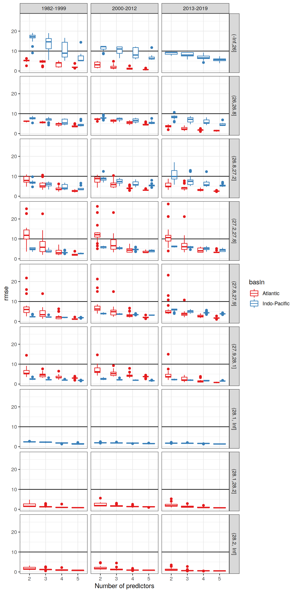
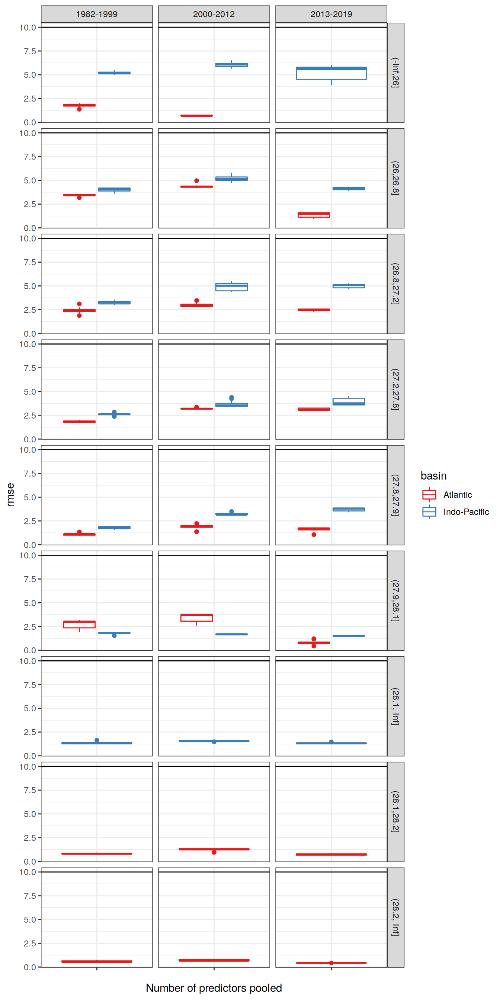
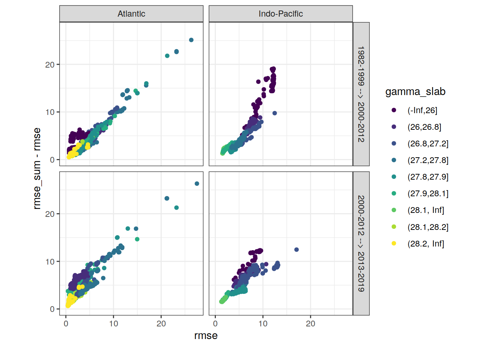
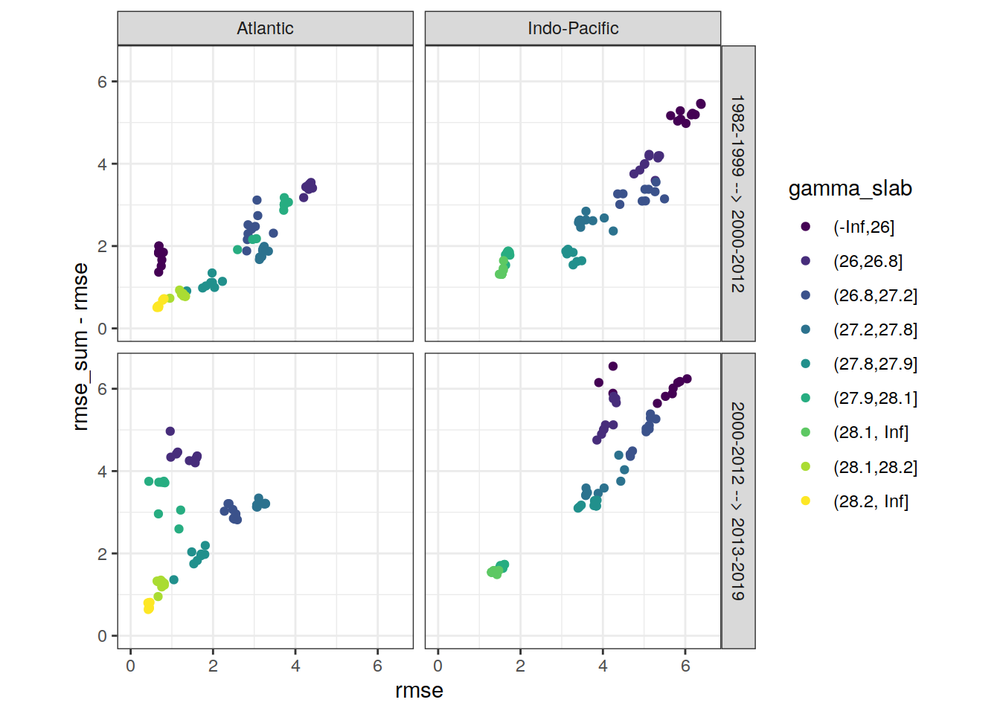
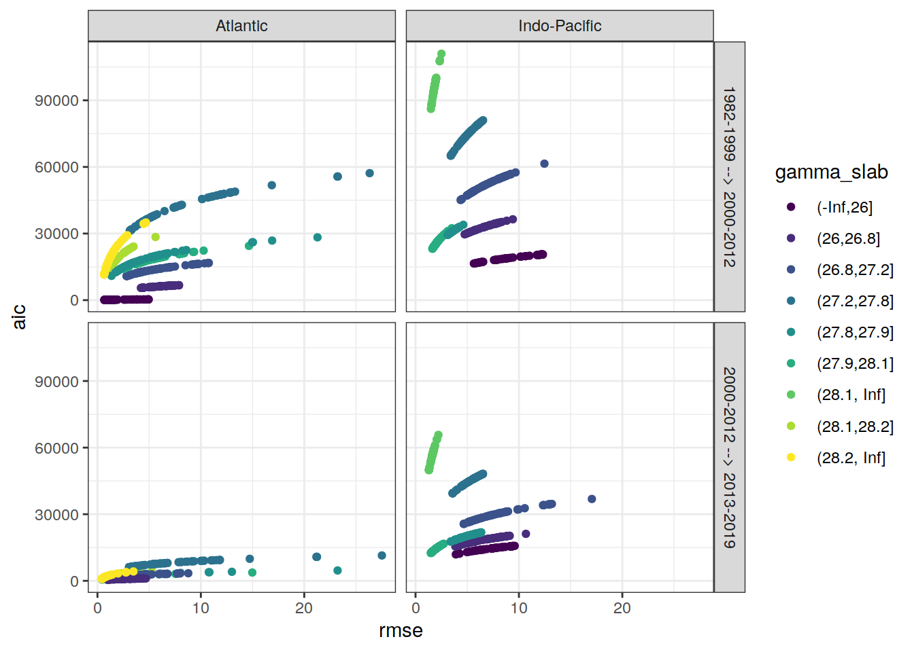
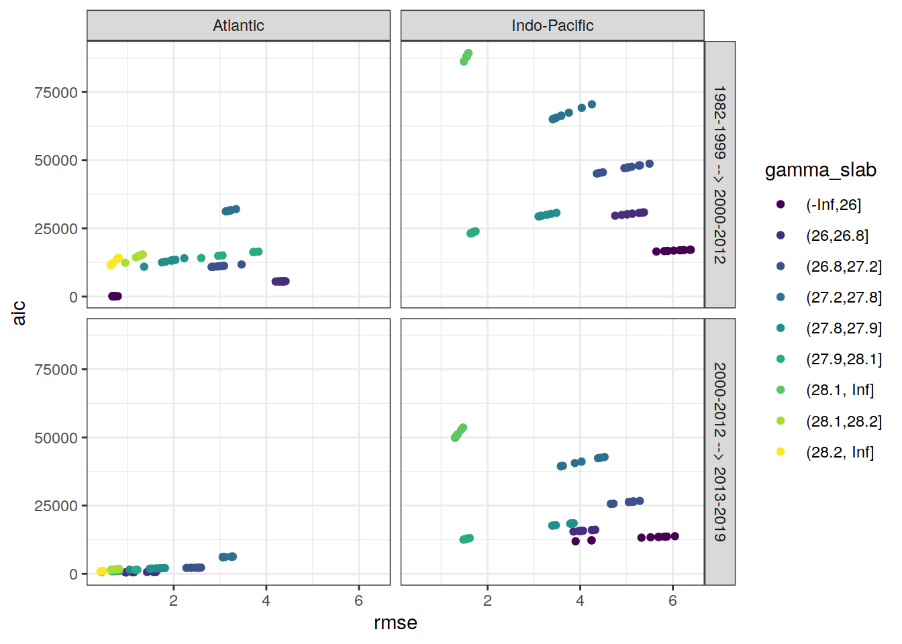

Last updated: 2021-01-30
Checks: 7 0
Knit directory: emlr_mod_v_109/
This reproducible R Markdown analysis was created with workflowr (version 1.6.2). The Checks tab describes the reproducibility checks that were applied when the results were created. The Past versions tab lists the development history.
Great! Since the R Markdown file has been committed to the Git repository, you know the exact version of the code that produced these results.
Great job! The global environment was empty. Objects defined in the global environment can affect the analysis in your R Markdown file in unknown ways. For reproduciblity it’s best to always run the code in an empty environment.
The command set.seed(20200707) was run prior to running the code in the R Markdown file. Setting a seed ensures that any results that rely on randomness, e.g. subsampling or permutations, are reproducible.
Great job! Recording the operating system, R version, and package versions is critical for reproducibility.
Nice! There were no cached chunks for this analysis, so you can be confident that you successfully produced the results during this run.
Great job! Using relative paths to the files within your workflowr project makes it easier to run your code on other machines.
Great! You are using Git for version control. Tracking code development and connecting the code version to the results is critical for reproducibility.
The results in this page were generated with repository version ac946e2. See the Past versions tab to see a history of the changes made to the R Markdown and HTML files.
Note that you need to be careful to ensure that all relevant files for the analysis have been committed to Git prior to generating the results (you can use wflow_publish or wflow_git_commit). workflowr only checks the R Markdown file, but you know if there are other scripts or data files that it depends on. Below is the status of the Git repository when the results were generated:
Ignored files:
Ignored: .Rproj.user/
Unstaged changes:
Modified: analysis/_site.yml
Modified: data/auxillary/params_local.rds
Note that any generated files, e.g. HTML, png, CSS, etc., are not included in this status report because it is ok for generated content to have uncommitted changes.
These are the previous versions of the repository in which changes were made to the R Markdown (analysis/eMLR_model_fitting.Rmd) and HTML (docs/eMLR_model_fitting.html) files. If you’ve configured a remote Git repository (see ?wflow_git_remote), click on the hyperlinks in the table below to view the files as they were in that past version.
| File | Version | Author | Date | Message |
|---|---|---|---|---|
| Rmd | ef2f7b2 | Jens Müller | 2021-01-29 | Initial commit |
Required are:
GLODAP <-
read_csv(paste(path_version_data,
"GLODAPv2.2020_MLR_fitting_ready.csv",
sep = ""))Find all possible combinations of following considered predictor variables:
# the following code is a workaround to find all predictor combinations
# using the olsrr package and fit all models for one era, slab, and basin
i_basin <- unique(GLODAP$basin)[1]
i_era <- unique(GLODAP$era)[1]
# subset one basin and era for fitting
GLODAP_basin_era <- GLODAP %>%
filter(basin == i_basin, era == i_era)
i_gamma_slab <- unique(GLODAP_basin_era$gamma_slab)[1]
print(i_gamma_slab)
# subset one gamma slab
GLODAP_basin_era_slab <- GLODAP_basin_era %>%
filter(gamma_slab == i_gamma_slab)
# fit the full linear model, i.e. all predictor combinations
lm_full <- lm(paste(
params_local$MLR_target,
paste(params_local$MLR_predictors, collapse = " + "),
sep = " ~ "
),
data = GLODAP_basin_era_slab)
# fit linear models for all possible predictor combinations
# unfortunately, this functions does not provide model coefficients (yet)
lm_all <- ols_step_all_possible(lm_full)
# convert to tibble
lm_all <- as_tibble(lm_all)
# extract relevant columns and format model formula
lm_all <- lm_all %>%
select(n, predictors) %>%
mutate(lm_coeff = str_replace_all(predictors, " ", " + "),
lm_coeff = paste(params_local$MLR_target, "~", lm_coeff))
# remove predictor combinations with nitrate and phosphate
lm_all <- lm_all %>%
mutate(lm_coeff_filter = str_remove(lm_coeff, "phosphate_star")) %>%
filter(!(
str_detect(lm_coeff_filter, "nitrate") &
str_detect(lm_coeff_filter, "phosphate")
)) %>%
select(-lm_coeff_filter)
# remove helper objects
rm(i_gamma_slab,
i_era,
i_basin,
GLODAP_basin_era,
GLODAP_basin_era_slab,
lm_full)Select combinations with a total number of predictors in the range:
lm_all <- lm_all %>%
filter(n >= params_local$MLR_predictors_min,
n <= params_local$MLR_predictors_max)This results in a total number of MLR models of:
Individual linear regression models were fitted for the chosen target variable:
as a function of each predictor combination. Fitting was performed separately within each basin, era, and slab. Model diagnostics, such as the root mean squared error (RMSE), were calculated for each fitted model.
# loop across all basins, era, gamma slabs, and MLRs
# fit all MLR models
for (i_basin in unique(GLODAP$basin)) {
for (i_era in unique(GLODAP$era)) {
# i_basin <- unique(GLODAP$basin)[1]
# i_era <- unique(GLODAP$era)[1]
print(i_basin)
print(i_era)
GLODAP_basin_era <- GLODAP %>%
filter(basin == i_basin, era == i_era)
for (i_gamma_slab in unique(GLODAP_basin_era$gamma_slab)) {
# i_gamma_slab <- unique(GLODAP_basin_era$gamma_slab)[1]
print(i_gamma_slab)
GLODAP_basin_era_slab <- GLODAP_basin_era %>%
filter(gamma_slab == i_gamma_slab)
for (i_predictors in unique(lm_all$predictors)) {
# i_predictors <- unique(lm_all$predictors)[110]
# extract one model definition
i_lm <- lm_all %>%
filter(predictors == i_predictors) %>%
select(lm_coeff) %>%
pull()
# extract number of predictors
i_n_predictors <- lm_all %>%
filter(predictors == i_predictors) %>%
select(n) %>%
pull()
# fit model
i_lm_fit <- lm(as.formula(i_lm),
data = GLODAP_basin_era_slab)
# find max predictor correlation
i_cor_max <- GLODAP_basin_era_slab %>%
select(!!!syms(str_split(i_predictors, " ",
simplify = TRUE))) %>%
correlate(quiet = TRUE) %>%
select(-term) %>%
abs() %>%
max(na.rm = TRUE)
# calculate root mean squared error
i_rmse <- sqrt(c(crossprod(i_lm_fit$residuals)) /
length(i_lm_fit$residuals))
# calculate maximum residual
i_resid_max <- max(abs(i_lm_fit$residuals))
# calculate Akaike information criterion aic
i_aic <- AIC(i_lm_fit)
# collect model coefficients and diagnostics
coefficients <- tidy(i_lm_fit)
coefficients <- coefficients %>%
mutate(
basin = i_basin,
era = i_era,
gamma_slab = i_gamma_slab,
model = i_lm,
rmse = i_rmse,
aic = i_aic,
resid_max = i_resid_max,
n_predictors = i_n_predictors,
na_predictor = anyNA(coefficients$estimate),
cor_max = i_cor_max
)
if (exists("lm_all_fitted")) {
lm_all_fitted <- bind_rows(lm_all_fitted, coefficients)
}
if (!exists("lm_all_fitted")) {
lm_all_fitted <- coefficients
}
}
}
}
}
rm(
i_lm_fit,
coefficients,
i_rmse,
GLODAP_basin_era,
GLODAP_basin_era_slab,
i_lm,
i_basin,
i_era,
i_gamma_slab,
i_predictors,
i_aic,
i_n_predictors,
i_resid_max
)Coefficients are prepared for the mapping of Cant and the chosen target variable.
# select relevant columns
lm_all_fitted <- lm_all_fitted %>%
select(
basin,
gamma_slab,
era,
model,
n_predictors,
term,
estimate,
rmse,
aic,
resid_max,
na_predictor,
cor_max
)
# set coefficient to zero if not fitted (=NA)
lm_all_fitted <- lm_all_fitted %>%
mutate(estimate = if_else(is.na(estimate), 0, estimate))
# Prepare model coefficients for mapping of target variable
lm_all_fitted_wide <- lm_all_fitted %>%
pivot_wider(
values_from = estimate,
names_from = term,
names_prefix = "coeff_",
values_fill = 0
)Within each basin and slab, the following number of best linear regression models was selected:
The criterion used to select the best models was:
The criterion was summed up for two adjacent eras, and the models with lowest summed values were selected.
Please note, that currently the lm() function produces NAs for some predictors. It is not yet entirely clear when this happens, but presumably it is caused by some form of collinearity between predictors, such that including another predictor does not help to explain the target variable any better. The issues also expresses as exactly identical rmse values of different models. As an interim solution, models with fitted NA predictors were not included.
# remove models with predictors fitted as NA
lm_all_fitted_wide <- lm_all_fitted_wide %>%
filter(na_predictor == FALSE)# calculate RMSE sum for adjacent eras
lm_all_fitted_wide_eras <- lm_all_fitted_wide %>%
select(basin, gamma_slab, model, era, rmse, aic, resid_max) %>%
arrange(era) %>%
group_by(basin, gamma_slab, model) %>%
mutate(
eras = paste(lag(era), era, sep = " --> "),
rmse_sum = rmse + lag(rmse),
aic_sum = aic + lag(aic)
) %>%
ungroup() %>%
select(-c(era)) %>%
drop_na()
# subset models with lowest summed criterion
# chose which criterion is applied
if (params_local$MLR_criterion == "aic") {
lm_best <- lm_all_fitted_wide_eras %>%
group_by(basin, gamma_slab, eras) %>%
slice_min(order_by = aic_sum,
with_ties = FALSE,
n = params_local$MLR_number) %>%
ungroup() %>%
arrange(basin, gamma_slab, eras, model)
} else {
lm_best <- lm_all_fitted_wide_eras %>%
group_by(basin, gamma_slab, eras) %>%
slice_min(order_by = rmse_sum,
with_ties = FALSE,
n = params_local$MLR_number) %>%
ungroup() %>%
arrange(basin, gamma_slab, eras, model)
}
# print table
lm_best %>%
kable() %>%
add_header_above() %>%
kable_styling() %>%
scroll_box(width = "100%", height = "400px")| basin | gamma_slab | model | rmse | aic | resid_max | eras | rmse_sum | aic_sum |
|---|---|---|---|---|---|---|---|---|
| Atlantic | (-Inf,26] | cstar_tref ~ sal + aou + silicate + phosphate + phosphate_star | 0.6869975 | 122.5254 | 1.984437 | 1982-1999 –> 2000-2012 | 2.690144 | 356.3458 |
| Atlantic | (-Inf,26] | cstar_tref ~ sal + temp + aou + nitrate + phosphate_star | 0.7937326 | 137.5447 | 2.038326 | 1982-1999 –> 2000-2012 | 2.641875 | 362.9892 |
| Atlantic | (-Inf,26] | cstar_tref ~ sal + temp + aou + nitrate + silicate | 0.6839029 | 122.0559 | 2.205763 | 1982-1999 –> 2000-2012 | 2.683801 | 355.7075 |
| Atlantic | (-Inf,26] | cstar_tref ~ sal + temp + aou + phosphate + phosphate_star | 0.7425615 | 130.6140 | 2.160203 | 1982-1999 –> 2000-2012 | 2.257729 | 335.3984 |
| Atlantic | (-Inf,26] | cstar_tref ~ sal + temp + aou + silicate + phosphate | 0.6796001 | 121.3995 | 1.976695 | 1982-1999 –> 2000-2012 | 2.536204 | 347.3190 |
| Atlantic | (-Inf,26] | cstar_tref ~ sal + temp + aou + silicate + phosphate_star | 0.6802298 | 121.4959 | 1.974980 | 1982-1999 –> 2000-2012 | 2.516444 | 346.2669 |
| Atlantic | (-Inf,26] | cstar_tref ~ sal + temp + nitrate + silicate + phosphate_star | 0.7256169 | 128.2134 | 2.800423 | 1982-1999 –> 2000-2012 | 2.559006 | 352.8243 |
| Atlantic | (-Inf,26] | cstar_tref ~ sal + temp + silicate + phosphate + phosphate_star | 0.6785582 | 121.2400 | 1.974894 | 1982-1999 –> 2000-2012 | 2.506136 | 345.5207 |
| Atlantic | (-Inf,26] | cstar_tref ~ temp + aou + phosphate + phosphate_star | 0.7570324 | 130.6213 | 2.136522 | 1982-1999 –> 2000-2012 | 2.421801 | 343.1983 |
| Atlantic | (-Inf,26] | cstar_tref ~ temp + aou + silicate + phosphate + phosphate_star | 0.6801275 | 121.4802 | 1.935427 | 1982-1999 –> 2000-2012 | 2.046535 | 315.5171 |
| Atlantic | (26,26.8] | cstar_tref ~ aou + silicate + phosphate + phosphate_star | 4.2831647 | 5540.8654 | 13.607984 | 1982-1999 –> 2000-2012 | 7.735944 | 9348.6580 |
| Atlantic | (26,26.8] | cstar_tref ~ sal + aou + silicate + phosphate + phosphate_star | 4.2010384 | 5505.6160 | 12.073973 | 1982-1999 –> 2000-2012 | 7.378723 | 9196.8466 |
| Atlantic | (26,26.8] | cstar_tref ~ sal + temp + aou + nitrate + phosphate_star | 4.4153834 | 5601.3599 | 11.305711 | 1982-1999 –> 2000-2012 | 7.824101 | 9392.8123 |
| Atlantic | (26,26.8] | cstar_tref ~ sal + temp + aou + silicate + phosphate | 4.3240855 | 5561.1599 | 12.370766 | 1982-1999 –> 2000-2012 | 7.702021 | 9339.6580 |
| Atlantic | (26,26.8] | cstar_tref ~ sal + temp + aou + silicate + phosphate_star | 4.3680393 | 5580.6183 | 12.362332 | 1982-1999 –> 2000-2012 | 7.807512 | 9384.8967 |
| Atlantic | (26,26.8] | cstar_tref ~ sal + temp + silicate + phosphate + phosphate_star | 4.3798087 | 5585.7955 | 12.335651 | 1982-1999 –> 2000-2012 | 7.841635 | 9399.3249 |
| Atlantic | (26,26.8] | cstar_tref ~ temp + aou + nitrate + silicate + phosphate_star | 4.3388935 | 5567.7374 | 12.819870 | 1982-1999 –> 2000-2012 | 7.833141 | 9394.5780 |
| Atlantic | (26,26.8] | cstar_tref ~ temp + aou + silicate + phosphate | 4.3434308 | 5567.7483 | 13.148611 | 1982-1999 –> 2000-2012 | 7.848814 | 9397.1329 |
| Atlantic | (26,26.8] | cstar_tref ~ temp + aou + silicate + phosphate + phosphate_star | 4.2532986 | 5529.4026 | 14.251004 | 1982-1999 –> 2000-2012 | 7.689187 | 9332.1924 |
| Atlantic | (26,26.8] | cstar_tref ~ temp + aou + silicate + phosphate_star | 4.3794576 | 5583.6412 | 12.975592 | 1982-1999 –> 2000-2012 | 7.923907 | 9428.8520 |
| Atlantic | (26,26.8] | cstar_tref ~ aou + silicate + phosphate + phosphate_star | 1.5681255 | 677.2997 | 3.987129 | 2000-2012 –> 2013-2019 | 5.851290 | 6218.1652 |
| Atlantic | (26,26.8] | cstar_tref ~ sal + aou + silicate + phosphate + phosphate_star | 1.5672991 | 679.1121 | 4.220796 | 2000-2012 –> 2013-2019 | 5.768338 | 6184.7281 |
| Atlantic | (26,26.8] | cstar_tref ~ sal + temp + aou + nitrate + phosphate_star | 1.1106210 | 556.4934 | 3.898333 | 2000-2012 –> 2013-2019 | 5.526004 | 6157.8533 |
| Atlantic | (26,26.8] | cstar_tref ~ sal + temp + aou + nitrate + silicate | 0.9604940 | 504.7926 | 4.435881 | 2000-2012 –> 2013-2019 | 5.929221 | 6333.3173 |
| Atlantic | (26,26.8] | cstar_tref ~ sal + temp + aou + silicate + phosphate | 1.5992736 | 686.3017 | 4.862077 | 2000-2012 –> 2013-2019 | 5.923359 | 6247.4616 |
| Atlantic | (26,26.8] | cstar_tref ~ sal + temp + aou + silicate + phosphate_star | 1.6147405 | 689.7282 | 4.700544 | 2000-2012 –> 2013-2019 | 5.982780 | 6270.3465 |
| Atlantic | (26,26.8] | cstar_tref ~ temp + aou + nitrate + phosphate_star | 1.1422698 | 564.4963 | 5.918433 | 2000-2012 –> 2013-2019 | 5.603730 | 6183.8299 |
| Atlantic | (26,26.8] | cstar_tref ~ temp + aou + nitrate + silicate + phosphate_star | 0.9744006 | 509.9101 | 3.237852 | 2000-2012 –> 2013-2019 | 5.313294 | 6077.6475 |
| Atlantic | (26,26.8] | cstar_tref ~ temp + aou + silicate + phosphate | 1.6079654 | 686.2313 | 4.082563 | 2000-2012 –> 2013-2019 | 5.951396 | 6253.9796 |
| Atlantic | (26,26.8] | cstar_tref ~ temp + aou + silicate + phosphate + phosphate_star | 1.4256806 | 645.3973 | 4.008639 | 2000-2012 –> 2013-2019 | 5.678979 | 6174.7998 |
| Atlantic | (26.8,27.2] | cstar_tref ~ aou + silicate + phosphate + phosphate_star | 3.4657318 | 11756.1367 | 15.296131 | 1982-1999 –> 2000-2012 | 5.777895 | 19668.0632 |
| Atlantic | (26.8,27.2] | cstar_tref ~ sal + aou + nitrate + silicate + phosphate_star | 3.0677847 | 11220.0133 | 13.866613 | 1982-1999 –> 2000-2012 | 6.185007 | 20179.5961 |
| Atlantic | (26.8,27.2] | cstar_tref ~ sal + aou + silicate + phosphate | 2.8499582 | 10893.0634 | 10.798587 | 1982-1999 –> 2000-2012 | 5.366940 | 19102.0605 |
| Atlantic | (26.8,27.2] | cstar_tref ~ sal + aou + silicate + phosphate + phosphate_star | 2.8326001 | 10868.1094 | 11.401777 | 1982-1999 –> 2000-2012 | 4.990115 | 18539.7433 |
| Atlantic | (26.8,27.2] | cstar_tref ~ sal + temp + aou + silicate + phosphate | 2.8496831 | 10894.6376 | 10.873650 | 1982-1999 –> 2000-2012 | 5.148596 | 18788.4494 |
| Atlantic | (26.8,27.2] | cstar_tref ~ sal + temp + aou + silicate + phosphate_star | 2.9345586 | 11024.1265 | 11.320676 | 1982-1999 –> 2000-2012 | 5.346981 | 19086.6209 |
| Atlantic | (26.8,27.2] | cstar_tref ~ sal + temp + nitrate + silicate + phosphate_star | 3.0865833 | 11246.9666 | 14.896395 | 1982-1999 –> 2000-2012 | 5.826090 | 19754.4744 |
| Atlantic | (26.8,27.2] | cstar_tref ~ sal + temp + silicate + phosphate + phosphate_star | 2.9596385 | 11061.6730 | 11.620540 | 1982-1999 –> 2000-2012 | 5.409331 | 19177.8269 |
| Atlantic | (26.8,27.2] | cstar_tref ~ temp + aou + nitrate + silicate + phosphate_star | 3.0260015 | 11159.5089 | 9.116436 | 1982-1999 –> 2000-2012 | 5.502273 | 19313.4326 |
| Atlantic | (26.8,27.2] | cstar_tref ~ temp + aou + silicate + phosphate + phosphate_star | 2.8176138 | 10844.7050 | 13.875777 | 1982-1999 –> 2000-2012 | 4.699707 | 18038.3360 |
| Atlantic | (26.8,27.2] | cstar_tref ~ sal + aou + nitrate + silicate + phosphate_star | 2.4806784 | 2220.4421 | 8.169811 | 2000-2012 –> 2013-2019 | 5.548463 | 13440.4555 |
| Atlantic | (26.8,27.2] | cstar_tref ~ sal + aou + silicate + phosphate | 2.5433421 | 2242.0918 | 7.997344 | 2000-2012 –> 2013-2019 | 5.393300 | 13135.1553 |
| Atlantic | (26.8,27.2] | cstar_tref ~ sal + aou + silicate + phosphate + phosphate_star | 2.5220452 | 2236.1202 | 8.156029 | 2000-2012 –> 2013-2019 | 5.354645 | 13104.2297 |
| Atlantic | (26.8,27.2] | cstar_tref ~ sal + temp + aou + nitrate + silicate | 2.3640458 | 2174.7887 | 8.118943 | 2000-2012 –> 2013-2019 | 5.570864 | 13590.3577 |
| Atlantic | (26.8,27.2] | cstar_tref ~ sal + temp + aou + silicate + phosphate | 2.4953412 | 2226.0291 | 8.014144 | 2000-2012 –> 2013-2019 | 5.345024 | 13120.6667 |
| Atlantic | (26.8,27.2] | cstar_tref ~ sal + temp + aou + silicate + phosphate_star | 2.5461223 | 2245.1275 | 8.343240 | 2000-2012 –> 2013-2019 | 5.480681 | 13269.2540 |
| Atlantic | (26.8,27.2] | cstar_tref ~ sal + temp + silicate + phosphate + phosphate_star | 2.5548170 | 2248.3593 | 8.399737 | 2000-2012 –> 2013-2019 | 5.514456 | 13310.0324 |
| Atlantic | (26.8,27.2] | cstar_tref ~ temp + aou + nitrate + silicate | 2.3878253 | 2182.2768 | 8.096746 | 2000-2012 –> 2013-2019 | 5.597054 | 13599.1608 |
| Atlantic | (26.8,27.2] | cstar_tref ~ temp + aou + nitrate + silicate + phosphate_star | 2.2760393 | 2138.8238 | 7.988200 | 2000-2012 –> 2013-2019 | 5.302041 | 13298.3327 |
| Atlantic | (26.8,27.2] | cstar_tref ~ temp + aou + silicate + phosphate + phosphate_star | 2.5898624 | 2261.2750 | 11.788009 | 2000-2012 –> 2013-2019 | 5.407476 | 13105.9800 |
| Atlantic | (27.2,27.8] | cstar_tref ~ sal + aou + phosphate + phosphate_star | 3.2181016 | 31571.9570 | 18.578616 | 1982-1999 –> 2000-2012 | 5.166563 | 48605.5428 |
| Atlantic | (27.2,27.8] | cstar_tref ~ sal + aou + silicate + phosphate + phosphate_star | 3.1332405 | 31248.0327 | 20.183735 | 1982-1999 –> 2000-2012 | 4.864710 | 47320.1689 |
| Atlantic | (27.2,27.8] | cstar_tref ~ sal + temp + aou + phosphate | 3.2069390 | 31529.5793 | 19.168028 | 1982-1999 –> 2000-2012 | 5.107352 | 48359.4195 |
| Atlantic | (27.2,27.8] | cstar_tref ~ sal + temp + aou + phosphate + phosphate_star | 3.2040234 | 31520.4862 | 19.738581 | 1982-1999 –> 2000-2012 | 5.104405 | 48352.1888 |
| Atlantic | (27.2,27.8] | cstar_tref ~ sal + temp + aou + silicate + phosphate | 3.1266551 | 31222.3725 | 20.747453 | 1982-1999 –> 2000-2012 | 4.800036 | 47016.0561 |
| Atlantic | (27.2,27.8] | cstar_tref ~ sal + temp + aou + silicate + phosphate_star | 3.1799106 | 31428.3544 | 23.327812 | 1982-1999 –> 2000-2012 | 4.923423 | 47557.0495 |
| Atlantic | (27.2,27.8] | cstar_tref ~ sal + temp + nitrate + silicate + phosphate_star | 3.1792223 | 31425.7145 | 22.569493 | 1982-1999 –> 2000-2012 | 4.922930 | 47555.3245 |
| Atlantic | (27.2,27.8] | cstar_tref ~ sal + temp + phosphate + phosphate_star | 3.2421112 | 31662.6110 | 21.764936 | 1982-1999 –> 2000-2012 | 5.233657 | 48874.6659 |
| Atlantic | (27.2,27.8] | cstar_tref ~ sal + temp + silicate + phosphate + phosphate_star | 3.1719904 | 31397.9401 | 23.072153 | 1982-1999 –> 2000-2012 | 4.921557 | 47554.9214 |
| Atlantic | (27.2,27.8] | cstar_tref ~ sal + temp + silicate + phosphate_star | 3.3446928 | 32042.5181 | 26.420318 | 1982-1999 –> 2000-2012 | 5.219432 | 48761.3693 |
| Atlantic | (27.2,27.8] | cstar_tref ~ sal + aou + phosphate + phosphate_star | 3.2650398 | 6288.5317 | 17.282205 | 2000-2012 –> 2013-2019 | 6.483141 | 37860.4887 |
| Atlantic | (27.2,27.8] | cstar_tref ~ sal + aou + silicate + phosphate | 3.2371078 | 6267.8086 | 9.468559 | 2000-2012 –> 2013-2019 | 6.438752 | 37777.2334 |
| Atlantic | (27.2,27.8] | cstar_tref ~ sal + aou + silicate + phosphate + phosphate_star | 3.0565371 | 6131.3654 | 11.429999 | 2000-2012 –> 2013-2019 | 6.189778 | 37379.3981 |
| Atlantic | (27.2,27.8] | cstar_tref ~ sal + temp + aou + phosphate | 3.2763701 | 6296.8873 | 16.451906 | 2000-2012 –> 2013-2019 | 6.483309 | 37826.4666 |
| Atlantic | (27.2,27.8] | cstar_tref ~ sal + temp + aou + phosphate + phosphate_star | 3.2649867 | 6290.4924 | 17.234648 | 2000-2012 –> 2013-2019 | 6.469010 | 37810.9787 |
| Atlantic | (27.2,27.8] | cstar_tref ~ sal + temp + aou + silicate + phosphate | 3.0731691 | 6144.4546 | 11.810149 | 2000-2012 –> 2013-2019 | 6.199824 | 37366.8271 |
| Atlantic | (27.2,27.8] | cstar_tref ~ sal + temp + aou + silicate + phosphate_star | 3.0657461 | 6138.6215 | 11.060015 | 2000-2012 –> 2013-2019 | 6.245657 | 37566.9760 |
| Atlantic | (27.2,27.8] | cstar_tref ~ sal + temp + nitrate + silicate + phosphate_star | 3.0646788 | 6137.7817 | 11.157582 | 2000-2012 –> 2013-2019 | 6.243901 | 37563.4962 |
| Atlantic | (27.2,27.8] | cstar_tref ~ sal + temp + silicate + phosphate + phosphate_star | 3.0640339 | 6137.2741 | 11.017045 | 2000-2012 –> 2013-2019 | 6.236024 | 37535.2141 |
| Atlantic | (27.2,27.8] | cstar_tref ~ sal + temp + silicate + phosphate_star | 3.1082233 | 6169.8114 | 11.647007 | 2000-2012 –> 2013-2019 | 6.452916 | 38212.3295 |
| Atlantic | (27.8,27.9] | cstar_tref ~ sal + aou + phosphate + phosphate_star | 2.2283421 | 14039.2009 | 16.884255 | 1982-1999 –> 2000-2012 | 3.370717 | 20228.3522 |
| Atlantic | (27.8,27.9] | cstar_tref ~ sal + aou + silicate + phosphate | 1.9775390 | 13284.8017 | 15.979091 | 1982-1999 –> 2000-2012 | 3.323962 | 20128.0349 |
| Atlantic | (27.8,27.9] | cstar_tref ~ sal + aou + silicate + phosphate + phosphate_star | 1.7469485 | 12503.4797 | 14.956351 | 1982-1999 –> 2000-2012 | 2.728467 | 18090.6119 |
| Atlantic | (27.8,27.9] | cstar_tref ~ sal + temp + aou + nitrate + phosphate_star | 2.0366759 | 13472.9673 | 31.194348 | 1982-1999 –> 2000-2012 | 3.031754 | 19114.7029 |
| Atlantic | (27.8,27.9] | cstar_tref ~ sal + temp + aou + phosphate + phosphate_star | 1.3610231 | 10926.2932 | 9.363980 | 1982-1999 –> 2000-2012 | 2.270392 | 16209.5516 |
| Atlantic | (27.8,27.9] | cstar_tref ~ sal + temp + aou + silicate + phosphate | 1.8282435 | 12790.8548 | 15.515814 | 1982-1999 –> 2000-2012 | 2.859577 | 18575.0256 |
| Atlantic | (27.8,27.9] | cstar_tref ~ sal + temp + aou + silicate + phosphate_star | 1.9522346 | 13205.4357 | 16.041275 | 1982-1999 –> 2000-2012 | 3.063147 | 19285.4323 |
| Atlantic | (27.8,27.9] | cstar_tref ~ sal + temp + nitrate + silicate + phosphate_star | 1.9617957 | 13236.3026 | 16.146041 | 1982-1999 –> 2000-2012 | 3.075019 | 19324.5695 |
| Atlantic | (27.8,27.9] | cstar_tref ~ sal + temp + silicate + phosphate + phosphate_star | 1.9442380 | 13179.5032 | 15.944331 | 1982-1999 –> 2000-2012 | 3.053875 | 19254.9309 |
| Atlantic | (27.8,27.9] | cstar_tref ~ sal + temp + silicate + phosphate_star | 1.9853943 | 13309.8488 | 16.539694 | 1982-1999 –> 2000-2012 | 3.101370 | 19405.9478 |
| Atlantic | (27.8,27.9] | cstar_tref ~ sal + aou + silicate + phosphate | 1.7993383 | 2058.4847 | 13.320802 | 2000-2012 –> 2013-2019 | 3.776877 | 15343.2864 |
| Atlantic | (27.8,27.9] | cstar_tref ~ sal + aou + silicate + phosphate + phosphate_star | 1.5332336 | 1897.2439 | 11.676548 | 2000-2012 –> 2013-2019 | 3.280182 | 14400.7236 |
| Atlantic | (27.8,27.9] | cstar_tref ~ sal + temp + aou + nitrate + phosphate_star | 1.4831931 | 1863.3985 | 8.449612 | 2000-2012 –> 2013-2019 | 3.519869 | 15336.3657 |
| Atlantic | (27.8,27.9] | cstar_tref ~ sal + temp + aou + phosphate + phosphate_star | 1.0486170 | 1509.7389 | 7.004123 | 2000-2012 –> 2013-2019 | 2.409640 | 12436.0320 |
| Atlantic | (27.8,27.9] | cstar_tref ~ sal + temp + aou + silicate + phosphate | 1.6168700 | 1951.4193 | 12.518191 | 2000-2012 –> 2013-2019 | 3.445114 | 14742.2741 |
| Atlantic | (27.8,27.9] | cstar_tref ~ sal + temp + aou + silicate + phosphate_star | 1.7079808 | 2007.3354 | 13.097911 | 2000-2012 –> 2013-2019 | 3.660215 | 15212.7711 |
| Atlantic | (27.8,27.9] | cstar_tref ~ sal + temp + nitrate + silicate + phosphate_star | 1.7119179 | 2009.6839 | 13.218964 | 2000-2012 –> 2013-2019 | 3.673714 | 15245.9866 |
| Atlantic | (27.8,27.9] | cstar_tref ~ sal + temp + silicate + phosphate + phosphate_star | 1.7048007 | 2005.4345 | 13.026126 | 2000-2012 –> 2013-2019 | 3.649039 | 15184.9377 |
| Atlantic | (27.8,27.9] | cstar_tref ~ sal + temp + silicate + phosphate_star | 1.7119900 | 2007.7269 | 13.230931 | 2000-2012 –> 2013-2019 | 3.697384 | 15317.5756 |
| Atlantic | (27.8,27.9] | cstar_tref ~ temp + aou + silicate + phosphate + phosphate_star | 1.8111274 | 2067.1458 | 10.600441 | 2000-2012 –> 2013-2019 | 4.004377 | 16008.0570 |
| Atlantic | (27.9,28.1] | cstar_tref ~ sal + aou + silicate + phosphate + phosphate_star | 3.7298224 | 16294.5006 | 19.690922 | 1982-1999 –> 2000-2012 | 6.748406 | 26423.5952 |
| Atlantic | (27.9,28.1] | cstar_tref ~ sal + temp + aou + nitrate + phosphate_star | 2.9608878 | 14920.3536 | 14.707505 | 1982-1999 –> 2000-2012 | 5.121469 | 23709.1318 |
| Atlantic | (27.9,28.1] | cstar_tref ~ sal + temp + aou + silicate + phosphate | 3.7271438 | 16290.2245 | 19.468709 | 1982-1999 –> 2000-2012 | 6.733149 | 26402.5832 |
| Atlantic | (27.9,28.1] | cstar_tref ~ sal + temp + aou + silicate + phosphate_star | 3.7292248 | 16293.5468 | 19.337615 | 1982-1999 –> 2000-2012 | 6.733484 | 26403.5764 |
| Atlantic | (27.9,28.1] | cstar_tref ~ sal + temp + nitrate + phosphate_star | 3.8308071 | 16451.5076 | 19.112204 | 1982-1999 –> 2000-2012 | 6.896653 | 26640.8694 |
| Atlantic | (27.9,28.1] | cstar_tref ~ sal + temp + nitrate + silicate + phosphate_star | 3.7164139 | 16273.0649 | 18.956933 | 1982-1999 –> 2000-2012 | 6.586185 | 26199.5331 |
| Atlantic | (27.9,28.1] | cstar_tref ~ sal + temp + silicate + phosphate + phosphate_star | 3.7291540 | 16293.4338 | 19.342896 | 1982-1999 –> 2000-2012 | 6.733227 | 26403.2150 |
| Atlantic | (27.9,28.1] | cstar_tref ~ sal + temp + silicate + phosphate_star | 3.7299974 | 16292.7798 | 19.279590 | 1982-1999 –> 2000-2012 | 6.906365 | 26624.0848 |
| Atlantic | (27.9,28.1] | cstar_tref ~ temp + aou + nitrate + phosphate_star | 3.0532714 | 15101.2254 | 15.115211 | 1982-1999 –> 2000-2012 | 5.232800 | 23922.9979 |
| Atlantic | (27.9,28.1] | cstar_tref ~ temp + aou + nitrate + silicate + phosphate_star | 2.5948921 | 14135.0216 | 11.331983 | 1982-1999 –> 2000-2012 | 4.507795 | 22435.8039 |
| Atlantic | (27.9,28.1] | cstar_tref ~ sal + aou + phosphate + phosphate_star | 0.8064660 | 1100.2759 | 3.853902 | 2000-2012 –> 2013-2019 | 4.559890 | 17430.3208 |
| Atlantic | (27.9,28.1] | cstar_tref ~ sal + aou + silicate + phosphate + phosphate_star | 0.6843036 | 953.7848 | 2.858429 | 2000-2012 –> 2013-2019 | 4.414126 | 17248.2854 |
| Atlantic | (27.9,28.1] | cstar_tref ~ sal + temp + aou + nitrate + phosphate_star | 0.6740301 | 940.1101 | 3.045066 | 2000-2012 –> 2013-2019 | 3.634918 | 15860.4637 |
| Atlantic | (27.9,28.1] | cstar_tref ~ sal + temp + aou + phosphate + phosphate_star | 0.4411883 | 556.9920 | 2.417187 | 2000-2012 –> 2013-2019 | 4.192449 | 16885.6061 |
| Atlantic | (27.9,28.1] | cstar_tref ~ sal + temp + aou + silicate + phosphate | 0.7505520 | 1037.3209 | 3.033962 | 2000-2012 –> 2013-2019 | 4.477696 | 17327.5454 |
| Atlantic | (27.9,28.1] | cstar_tref ~ sal + temp + aou + silicate + phosphate_star | 0.8076574 | 1103.6104 | 3.292597 | 2000-2012 –> 2013-2019 | 4.536882 | 17397.1571 |
| Atlantic | (27.9,28.1] | cstar_tref ~ sal + temp + nitrate + silicate + phosphate_star | 0.8312166 | 1129.6026 | 3.303150 | 2000-2012 –> 2013-2019 | 4.547631 | 17402.6675 |
| Atlantic | (27.9,28.1] | cstar_tref ~ sal + temp + silicate + phosphate + phosphate_star | 0.7986991 | 1093.5275 | 3.279247 | 2000-2012 –> 2013-2019 | 4.527853 | 17386.9613 |
| Atlantic | (27.9,28.1] | cstar_tref ~ temp + aou + nitrate + phosphate_star | 1.2139445 | 1469.9834 | 4.896453 | 2000-2012 –> 2013-2019 | 4.267216 | 16571.2088 |
| Atlantic | (27.9,28.1] | cstar_tref ~ temp + aou + nitrate + silicate + phosphate_star | 1.1724539 | 1440.5458 | 5.293223 | 2000-2012 –> 2013-2019 | 3.767346 | 15575.5675 |
| Atlantic | (28.1,28.2] | cstar_tref ~ aou + silicate + phosphate + phosphate_star | 1.2713095 | 15012.5517 | 12.954801 | 1982-1999 –> 2000-2012 | 2.117885 | 20885.7024 |
| Atlantic | (28.1,28.2] | cstar_tref ~ sal + aou + silicate + phosphate + phosphate_star | 1.2322877 | 14732.6658 | 10.895287 | 1982-1999 –> 2000-2012 | 2.064666 | 20528.6699 |
| Atlantic | (28.1,28.2] | cstar_tref ~ sal + temp + aou + nitrate | 1.3303993 | 15423.3443 | 9.462304 | 1982-1999 –> 2000-2012 | 2.115268 | 20942.3021 |
| Atlantic | (28.1,28.2] | cstar_tref ~ sal + temp + aou + nitrate + phosphate_star | 1.3138868 | 15312.4156 | 10.632818 | 1982-1999 –> 2000-2012 | 2.098754 | 20833.3618 |
| Atlantic | (28.1,28.2] | cstar_tref ~ sal + temp + aou + nitrate + silicate | 1.3288966 | 15415.1254 | 9.149981 | 1982-1999 –> 2000-2012 | 2.102930 | 20871.0244 |
| Atlantic | (28.1,28.2] | cstar_tref ~ sal + temp + aou + phosphate + phosphate_star | 1.1866943 | 14391.7752 | 21.810318 | 1982-1999 –> 2000-2012 | 2.117663 | 20711.6505 |
| Atlantic | (28.1,28.2] | cstar_tref ~ sal + temp + aou + silicate + phosphate | 1.2456990 | 14830.5408 | 10.818052 | 1982-1999 –> 2000-2012 | 2.087232 | 20677.7333 |
| Atlantic | (28.1,28.2] | cstar_tref ~ sal + temp + nitrate + silicate + phosphate_star | 1.2801748 | 15077.3858 | 9.236627 | 1982-1999 –> 2000-2012 | 2.067153 | 20610.9001 |
| Atlantic | (28.1,28.2] | cstar_tref ~ sal + temp + silicate + phosphate + phosphate_star | 1.2521913 | 14877.5430 | 10.844857 | 1982-1999 –> 2000-2012 | 2.102406 | 20772.7710 |
| Atlantic | (28.1,28.2] | cstar_tref ~ temp + aou + silicate + phosphate + phosphate_star | 0.9520506 | 12399.7445 | 14.944959 | 1982-1999 –> 2000-2012 | 1.684570 | 17597.6554 |
| Atlantic | (28.1,28.2] | cstar_tref ~ aou + silicate + phosphate + phosphate_star | 0.8180364 | 1763.6136 | 2.814618 | 2000-2012 –> 2013-2019 | 2.089346 | 16776.1653 |
| Atlantic | (28.1,28.2] | cstar_tref ~ sal + aou + nitrate + silicate + phosphate_star | 0.7320425 | 1605.8974 | 3.581121 | 2000-2012 –> 2013-2019 | 2.083008 | 17169.9467 |
| Atlantic | (28.1,28.2] | cstar_tref ~ sal + aou + silicate + phosphate + phosphate_star | 0.8179821 | 1765.5182 | 2.820555 | 2000-2012 –> 2013-2019 | 2.050270 | 16498.1840 |
| Atlantic | (28.1,28.2] | cstar_tref ~ sal + temp + aou + nitrate | 0.6800258 | 1497.9054 | 3.325540 | 2000-2012 –> 2013-2019 | 2.010425 | 16921.2497 |
| Atlantic | (28.1,28.2] | cstar_tref ~ sal + temp + aou + nitrate + phosphate_star | 0.6606945 | 1458.4349 | 2.793822 | 2000-2012 –> 2013-2019 | 1.974581 | 16770.8505 |
| Atlantic | (28.1,28.2] | cstar_tref ~ sal + temp + aou + nitrate + silicate | 0.6410328 | 1414.9914 | 2.694230 | 2000-2012 –> 2013-2019 | 1.969929 | 16830.1168 |
| Atlantic | (28.1,28.2] | cstar_tref ~ sal + temp + aou + phosphate + phosphate_star | 0.7538178 | 1648.0482 | 2.716751 | 2000-2012 –> 2013-2019 | 1.940512 | 16039.8234 |
| Atlantic | (28.1,28.2] | cstar_tref ~ sal + temp + nitrate + silicate + phosphate_star | 0.8018077 | 1736.7989 | 2.461413 | 2000-2012 –> 2013-2019 | 2.081983 | 16814.1847 |
| Atlantic | (28.1,28.2] | cstar_tref ~ temp + aou + nitrate + silicate + phosphate_star | 0.7700882 | 1678.7558 | 3.211362 | 2000-2012 –> 2013-2019 | 2.082530 | 16981.2180 |
| Atlantic | (28.1,28.2] | cstar_tref ~ temp + aou + silicate + phosphate + phosphate_star | 0.6658210 | 1469.5496 | 1.961911 | 2000-2012 –> 2013-2019 | 1.617872 | 13869.2941 |
| Atlantic | (28.2, Inf] | cstar_tref ~ sal + aou + nitrate | 0.6790836 | 12178.4888 | 4.592119 | 1982-1999 –> 2000-2012 | 1.226230 | 16168.4505 |
| Atlantic | (28.2, Inf] | cstar_tref ~ sal + aou + nitrate + phosphate_star | 0.6784036 | 12168.6749 | 4.515678 | 1982-1999 –> 2000-2012 | 1.196928 | 15898.5425 |
| Atlantic | (28.2, Inf] | cstar_tref ~ sal + aou + nitrate + silicate | 0.6615632 | 11872.2605 | 4.324570 | 1982-1999 –> 2000-2012 | 1.196177 | 15751.1882 |
| Atlantic | (28.2, Inf] | cstar_tref ~ sal + aou + nitrate + silicate + phosphate_star | 0.6380153 | 11446.8802 | 4.659857 | 1982-1999 –> 2000-2012 | 1.145340 | 15072.2337 |
| Atlantic | (28.2, Inf] | cstar_tref ~ sal + temp + aou + nitrate | 0.6786319 | 12172.6436 | 4.494297 | 1982-1999 –> 2000-2012 | 1.220970 | 16121.5480 |
| Atlantic | (28.2, Inf] | cstar_tref ~ sal + temp + aou + nitrate + phosphate_star | 0.6783961 | 12170.5449 | 4.526988 | 1982-1999 –> 2000-2012 | 1.189030 | 15827.6076 |
| Atlantic | (28.2, Inf] | cstar_tref ~ sal + temp + aou + nitrate + silicate | 0.6572459 | 11797.0554 | 4.595773 | 1982-1999 –> 2000-2012 | 1.191738 | 15676.8736 |
| Atlantic | (28.2, Inf] | cstar_tref ~ sal + temp + nitrate + silicate + phosphate_star | 0.7749638 | 13739.8832 | 4.422812 | 1982-1999 –> 2000-2012 | 1.459062 | 18823.5170 |
| Atlantic | (28.2, Inf] | cstar_tref ~ temp + aou + nitrate + silicate | 0.8108738 | 14272.0153 | 11.140337 | 1982-1999 –> 2000-2012 | 1.532409 | 19613.5430 |
| Atlantic | (28.2, Inf] | cstar_tref ~ temp + aou + nitrate + silicate + phosphate_star | 0.7986185 | 14094.4337 | 12.124359 | 1982-1999 –> 2000-2012 | 1.510631 | 19373.1539 |
| Atlantic | (28.2, Inf] | cstar_tref ~ aou + nitrate + silicate + phosphate_star | 0.4501223 | 993.9516 | 1.564889 | 2000-2012 –> 2013-2019 | 1.258437 | 15228.6924 |
| Atlantic | (28.2, Inf] | cstar_tref ~ sal + aou + nitrate | 0.4547557 | 1008.1528 | 2.060985 | 2000-2012 –> 2013-2019 | 1.133839 | 13186.6417 |
| Atlantic | (28.2, Inf] | cstar_tref ~ sal + aou + nitrate + phosphate_star | 0.4444906 | 974.0334 | 1.938180 | 2000-2012 –> 2013-2019 | 1.122894 | 13142.7083 |
| Atlantic | (28.2, Inf] | cstar_tref ~ sal + aou + nitrate + silicate | 0.4449066 | 975.5134 | 1.868612 | 2000-2012 –> 2013-2019 | 1.106470 | 12847.7740 |
| Atlantic | (28.2, Inf] | cstar_tref ~ sal + aou + nitrate + silicate + phosphate_star | 0.4267565 | 911.6217 | 1.588780 | 2000-2012 –> 2013-2019 | 1.064772 | 12358.5019 |
| Atlantic | (28.2, Inf] | cstar_tref ~ sal + temp + aou + nitrate | 0.4542792 | 1008.4942 | 1.987825 | 2000-2012 –> 2013-2019 | 1.132911 | 13181.1377 |
| Atlantic | (28.2, Inf] | cstar_tref ~ sal + temp + aou + nitrate + phosphate_star | 0.4378294 | 952.1458 | 2.357073 | 2000-2012 –> 2013-2019 | 1.116226 | 13122.6907 |
| Atlantic | (28.2, Inf] | cstar_tref ~ sal + temp + aou + nitrate + silicate | 0.4448646 | 977.3641 | 1.848841 | 2000-2012 –> 2013-2019 | 1.102110 | 12774.4195 |
| Atlantic | (28.2, Inf] | cstar_tref ~ temp + aou + nitrate + silicate | 0.4698081 | 1061.6689 | 1.571794 | 2000-2012 –> 2013-2019 | 1.280682 | 15333.6843 |
| Atlantic | (28.2, Inf] | cstar_tref ~ temp + aou + nitrate + silicate + phosphate_star | 0.4182040 | 879.5955 | 1.665398 | 2000-2012 –> 2013-2019 | 1.216822 | 14974.0291 |
| Indo-Pacific | (-Inf,26] | cstar_tref ~ sal + aou + phosphate + phosphate_star | 5.8788276 | 16716.3893 | 24.710256 | 1982-1999 –> 2000-2012 | 11.164825 | 23556.3650 |
| Indo-Pacific | (-Inf,26] | cstar_tref ~ sal + aou + silicate + phosphate + phosphate_star | 5.6447816 | 16505.6724 | 22.472536 | 1982-1999 –> 2000-2012 | 10.813017 | 23297.7666 |
| Indo-Pacific | (-Inf,26] | cstar_tref ~ sal + temp + aou + nitrate + phosphate_star | 5.8892665 | 16727.6785 | 44.474295 | 1982-1999 –> 2000-2012 | 10.970776 | 23482.3051 |
| Indo-Pacific | (-Inf,26] | cstar_tref ~ sal + temp + aou + phosphate | 6.2416255 | 17029.9382 | 23.263289 | 1982-1999 –> 2000-2012 | 11.433970 | 23830.3364 |
| Indo-Pacific | (-Inf,26] | cstar_tref ~ sal + temp + aou + phosphate + phosphate_star | 5.8157682 | 16661.9218 | 26.111120 | 1982-1999 –> 2000-2012 | 10.851627 | 23396.5686 |
| Indo-Pacific | (-Inf,26] | cstar_tref ~ sal + temp + aou + phosphate_star | 6.3865665 | 17150.1366 | 23.531380 | 1982-1999 –> 2000-2012 | 11.828361 | 24054.4234 |
| Indo-Pacific | (-Inf,26] | cstar_tref ~ sal + temp + aou + silicate + phosphate | 6.0163238 | 16839.4406 | 20.873332 | 1982-1999 –> 2000-2012 | 10.995581 | 23549.0619 |
| Indo-Pacific | (-Inf,26] | cstar_tref ~ sal + temp + aou + silicate + phosphate_star | 6.1470699 | 16952.0100 | 22.982471 | 1982-1999 –> 2000-2012 | 11.332591 | 23751.4970 |
| Indo-Pacific | (-Inf,26] | cstar_tref ~ sal + temp + nitrate + silicate + phosphate_star | 6.3719990 | 17140.1799 | 23.554097 | 1982-1999 –> 2000-2012 | 11.837461 | 24056.0751 |
| Indo-Pacific | (-Inf,26] | cstar_tref ~ sal + temp + silicate + phosphate + phosphate_star | 6.1765125 | 16977.0290 | 23.574431 | 1982-1999 –> 2000-2012 | 11.400750 | 23792.9845 |
| Indo-Pacific | (-Inf,26] | cstar_tref ~ sal + aou + phosphate + phosphate_star | 5.6853690 | 13510.6246 | 23.674725 | 2000-2012 –> 2013-2019 | 11.564197 | 30227.0139 |
| Indo-Pacific | (-Inf,26] | cstar_tref ~ sal + aou + silicate + phosphate + phosphate_star | 5.3223262 | 13230.4703 | 23.080444 | 2000-2012 –> 2013-2019 | 10.967108 | 29736.1427 |
| Indo-Pacific | (-Inf,26] | cstar_tref ~ sal + temp + aou + nitrate | 4.2460706 | 12262.4515 | 16.013675 | 2000-2012 –> 2013-2019 | 10.793759 | 29543.0446 |
| Indo-Pacific | (-Inf,26] | cstar_tref ~ sal + temp + aou + nitrate + phosphate_star | 4.2434104 | 12261.7716 | 16.425423 | 2000-2012 –> 2013-2019 | 10.132677 | 28989.4502 |
| Indo-Pacific | (-Inf,26] | cstar_tref ~ sal + temp + aou + nitrate + silicate | 3.9002982 | 11901.2439 | 14.335032 | 2000-2012 –> 2013-2019 | 10.050924 | 28856.2818 |
| Indo-Pacific | (-Inf,26] | cstar_tref ~ sal + temp + aou + phosphate | 6.0448303 | 13772.7750 | 26.170547 | 2000-2012 –> 2013-2019 | 12.286456 | 30802.7132 |
| Indo-Pacific | (-Inf,26] | cstar_tref ~ sal + temp + aou + phosphate + phosphate_star | 5.5191033 | 13385.7102 | 24.637824 | 2000-2012 –> 2013-2019 | 11.334872 | 30047.6320 |
| Indo-Pacific | (-Inf,26] | cstar_tref ~ sal + temp + aou + silicate + phosphate | 5.7061331 | 13528.2130 | 27.531598 | 2000-2012 –> 2013-2019 | 11.722457 | 30367.6536 |
| Indo-Pacific | (-Inf,26] | cstar_tref ~ sal + temp + aou + silicate + phosphate_star | 5.8187367 | 13611.7728 | 29.594984 | 2000-2012 –> 2013-2019 | 11.965807 | 30563.7829 |
| Indo-Pacific | (-Inf,26] | cstar_tref ~ sal + temp + silicate + phosphate + phosphate_star | 5.8700780 | 13649.3364 | 30.276617 | 2000-2012 –> 2013-2019 | 12.046590 | 30626.3654 |
| Indo-Pacific | (26,26.8] | cstar_tref ~ sal + aou + phosphate + phosphate_star | 5.3453294 | 30796.4783 | 29.919960 | 1982-1999 –> 2000-2012 | 9.538348 | 46439.4077 |
| Indo-Pacific | (26,26.8] | cstar_tref ~ sal + aou + silicate + phosphate + phosphate_star | 4.7542220 | 29632.9055 | 31.830997 | 1982-1999 –> 2000-2012 | 8.507091 | 44670.1024 |
| Indo-Pacific | (26,26.8] | cstar_tref ~ sal + temp + aou + nitrate + phosphate_star | 5.2718160 | 30660.7434 | 37.766965 | 1982-1999 –> 2000-2012 | 8.865586 | 45460.5522 |
| Indo-Pacific | (26,26.8] | cstar_tref ~ sal + temp + aou + phosphate + phosphate_star | 5.3365690 | 30782.1646 | 28.850247 | 1982-1999 –> 2000-2012 | 9.476759 | 46357.6125 |
| Indo-Pacific | (26,26.8] | cstar_tref ~ sal + temp + aou + silicate + phosphate | 4.8959521 | 29925.0763 | 34.819595 | 1982-1999 –> 2000-2012 | 8.742581 | 45097.5002 |
| Indo-Pacific | (26,26.8] | cstar_tref ~ sal + temp + aou + silicate + phosphate_star | 5.0067745 | 30147.6988 | 34.889676 | 1982-1999 –> 2000-2012 | 8.992854 | 45515.2700 |
| Indo-Pacific | (26,26.8] | cstar_tref ~ sal + temp + nitrate + phosphate_star | 5.3759393 | 30853.2714 | 33.923796 | 1982-1999 –> 2000-2012 | 9.569865 | 46497.3865 |
| Indo-Pacific | (26,26.8] | cstar_tref ~ sal + temp + nitrate + silicate + phosphate_star | 5.1215941 | 30373.2129 | 32.211794 | 1982-1999 –> 2000-2012 | 9.310023 | 46012.1414 |
| Indo-Pacific | (26,26.8] | cstar_tref ~ sal + temp + silicate + phosphate + phosphate_star | 5.0176494 | 30169.2784 | 34.827216 | 1982-1999 –> 2000-2012 | 9.018067 | 45556.5270 |
| Indo-Pacific | (26,26.8] | cstar_tref ~ sal + temp + silicate + phosphate_star | 5.1231343 | 30374.2034 | 32.175708 | 1982-1999 –> 2000-2012 | 9.349481 | 46060.5192 |
| Indo-Pacific | (26,26.8] | cstar_tref ~ aou + silicate + phosphate + phosphate_star | 4.2629286 | 16043.3849 | 22.820103 | 2000-2012 –> 2013-2019 | 10.079132 | 47679.5501 |
| Indo-Pacific | (26,26.8] | cstar_tref ~ sal + aou + silicate + phosphate + phosphate_star | 3.8539369 | 15481.7725 | 17.438212 | 2000-2012 –> 2013-2019 | 8.608159 | 45114.6780 |
| Indo-Pacific | (26,26.8] | cstar_tref ~ sal + temp + aou + silicate + phosphate | 3.9671534 | 15643.5653 | 17.642505 | 2000-2012 –> 2013-2019 | 8.863105 | 45568.6415 |
| Indo-Pacific | (26,26.8] | cstar_tref ~ sal + temp + aou + silicate + phosphate_star | 4.0155160 | 15711.2754 | 17.932901 | 2000-2012 –> 2013-2019 | 9.022291 | 45858.9742 |
| Indo-Pacific | (26,26.8] | cstar_tref ~ sal + temp + nitrate + silicate + phosphate_star | 4.0618039 | 15775.3213 | 17.915176 | 2000-2012 –> 2013-2019 | 9.183398 | 46148.5341 |
| Indo-Pacific | (26,26.8] | cstar_tref ~ sal + temp + silicate + phosphate + phosphate_star | 4.0254304 | 15725.0552 | 17.908166 | 2000-2012 –> 2013-2019 | 9.043080 | 45894.3336 |
| Indo-Pacific | (26,26.8] | cstar_tref ~ sal + temp + silicate + phosphate_star | 4.2522286 | 16029.3413 | 16.637590 | 2000-2012 –> 2013-2019 | 9.375363 | 46403.5447 |
| Indo-Pacific | (26,26.8] | cstar_tref ~ temp + aou + nitrate + silicate + phosphate_star | 4.3245129 | 16125.5342 | 23.368599 | 2000-2012 –> 2013-2019 | 9.984213 | 47492.4045 |
| Indo-Pacific | (26,26.8] | cstar_tref ~ temp + aou + silicate + phosphate | 4.3121617 | 16107.5515 | 22.702177 | 2000-2012 –> 2013-2019 | 10.073591 | 47649.6059 |
| Indo-Pacific | (26,26.8] | cstar_tref ~ temp + aou + silicate + phosphate + phosphate_star | 4.2530225 | 16032.3845 | 23.136167 | 2000-2012 –> 2013-2019 | 10.013144 | 47574.1813 |
| Indo-Pacific | (26.8,27.2] | cstar_tref ~ aou + phosphate + phosphate_star | 5.1091377 | 47565.1195 | 29.409302 | 1982-1999 –> 2000-2012 | 8.488529 | 68404.5294 |
| Indo-Pacific | (26.8,27.2] | cstar_tref ~ aou + silicate + phosphate + phosphate_star | 5.0215468 | 47297.4928 | 26.538140 | 1982-1999 –> 2000-2012 | 8.400936 | 68138.8966 |
| Indo-Pacific | (26.8,27.2] | cstar_tref ~ sal + aou + phosphate + phosphate_star | 5.0327997 | 47332.3941 | 32.546109 | 1982-1999 –> 2000-2012 | 8.129062 | 67482.5557 |
| Indo-Pacific | (26.8,27.2] | cstar_tref ~ sal + aou + silicate + phosphate + phosphate_star | 4.9544782 | 47089.8402 | 29.630154 | 1982-1999 –> 2000-2012 | 8.046383 | 67230.8751 |
| Indo-Pacific | (26.8,27.2] | cstar_tref ~ sal + temp + aou + nitrate + phosphate_star | 5.4959704 | 48707.0942 | 31.044016 | 1982-1999 –> 2000-2012 | 8.642230 | 68985.8027 |
| Indo-Pacific | (26.8,27.2] | cstar_tref ~ sal + temp + aou + phosphate + phosphate_star | 4.4112743 | 45279.1686 | 31.493705 | 1982-1999 –> 2000-2012 | 7.422530 | 65211.4042 |
| Indo-Pacific | (26.8,27.2] | cstar_tref ~ sal + temp + aou + silicate + phosphate | 5.2898916 | 48111.2082 | 25.851114 | 1982-1999 –> 2000-2012 | 8.844054 | 69352.9656 |
| Indo-Pacific | (26.8,27.2] | cstar_tref ~ temp + aou + nitrate + silicate + phosphate_star | 5.2661468 | 48041.0627 | 26.691385 | 1982-1999 –> 2000-2012 | 8.586607 | 68745.4944 |
| Indo-Pacific | (26.8,27.2] | cstar_tref ~ temp + aou + phosphate + phosphate_star | 4.4885276 | 45547.8630 | 32.803578 | 1982-1999 –> 2000-2012 | 7.757837 | 66127.6492 |
| Indo-Pacific | (26.8,27.2] | cstar_tref ~ temp + aou + silicate + phosphate + phosphate_star | 4.3588932 | 45092.9152 | 30.594893 | 1982-1999 –> 2000-2012 | 7.625039 | 65667.0532 |
| Indo-Pacific | (26.8,27.2] | cstar_tref ~ aou + phosphate + phosphate_star | 5.1253274 | 26450.1313 | 21.401818 | 2000-2012 –> 2013-2019 | 10.234465 | 74015.2508 |
| Indo-Pacific | (26.8,27.2] | cstar_tref ~ aou + silicate + phosphate + phosphate_star | 5.1233027 | 26448.7096 | 21.147983 | 2000-2012 –> 2013-2019 | 10.144850 | 73746.2025 |
| Indo-Pacific | (26.8,27.2] | cstar_tref ~ sal + aou + phosphate + phosphate_star | 5.0499351 | 26323.7986 | 19.064758 | 2000-2012 –> 2013-2019 | 10.082735 | 73656.1927 |
| Indo-Pacific | (26.8,27.2] | cstar_tref ~ sal + aou + silicate + phosphate + phosphate_star | 5.0499196 | 26325.7720 | 19.081106 | 2000-2012 –> 2013-2019 | 10.004398 | 73415.6122 |
| Indo-Pacific | (26.8,27.2] | cstar_tref ~ sal + temp + aou + phosphate | 5.1541739 | 26506.8525 | 18.194644 | 2000-2012 –> 2013-2019 | 10.542390 | 74903.2120 |
| Indo-Pacific | (26.8,27.2] | cstar_tref ~ sal + temp + aou + phosphate + phosphate_star | 4.6619318 | 25633.4708 | 22.137334 | 2000-2012 –> 2013-2019 | 9.073206 | 70912.6394 |
| Indo-Pacific | (26.8,27.2] | cstar_tref ~ sal + temp + aou + silicate + phosphate | 5.1537294 | 26508.1055 | 18.257430 | 2000-2012 –> 2013-2019 | 10.443621 | 74619.3137 |
| Indo-Pacific | (26.8,27.2] | cstar_tref ~ temp + aou + nitrate + silicate + phosphate_star | 5.2864414 | 26722.1661 | 20.091835 | 2000-2012 –> 2013-2019 | 10.552588 | 74763.2288 |
| Indo-Pacific | (26.8,27.2] | cstar_tref ~ temp + aou + phosphate + phosphate_star | 4.7178741 | 25734.7706 | 24.191919 | 2000-2012 –> 2013-2019 | 9.206402 | 71282.6336 |
| Indo-Pacific | (26.8,27.2] | cstar_tref ~ temp + aou + silicate + phosphate + phosphate_star | 4.6678513 | 25644.4599 | 23.150893 | 2000-2012 –> 2013-2019 | 9.026744 | 70737.3751 |
| Indo-Pacific | (27.2,27.8] | cstar_tref ~ sal + aou + nitrate + silicate + phosphate_star | 3.4598257 | 65416.6137 | 19.127330 | 1982-1999 –> 2000-2012 | 5.915475 | 92172.5994 |
| Indo-Pacific | (27.2,27.8] | cstar_tref ~ sal + aou + silicate + phosphate + phosphate_star | 3.4800671 | 65560.0329 | 14.436879 | 1982-1999 –> 2000-2012 | 6.077263 | 92962.7317 |
| Indo-Pacific | (27.2,27.8] | cstar_tref ~ sal + aou + silicate + phosphate_star | 3.5887347 | 66314.0059 | 17.069136 | 1982-1999 –> 2000-2012 | 6.224504 | 93884.8371 |
| Indo-Pacific | (27.2,27.8] | cstar_tref ~ sal + silicate + phosphate + phosphate_star | 3.7545007 | 67424.2019 | 21.164700 | 1982-1999 –> 2000-2012 | 6.370570 | 94908.4590 |
| Indo-Pacific | (27.2,27.8] | cstar_tref ~ sal + temp + aou + silicate + phosphate | 3.4069307 | 65037.8319 | 13.606822 | 1982-1999 –> 2000-2012 | 5.980662 | 92335.8008 |
| Indo-Pacific | (27.2,27.8] | cstar_tref ~ sal + temp + aou + silicate + phosphate_star | 3.4421624 | 65290.7742 | 14.181943 | 1982-1999 –> 2000-2012 | 6.074898 | 92850.3170 |
| Indo-Pacific | (27.2,27.8] | cstar_tref ~ sal + temp + nitrate + silicate + phosphate_star | 4.2517523 | 70484.1080 | 30.334263 | 1982-1999 –> 2000-2012 | 6.617159 | 96808.0221 |
| Indo-Pacific | (27.2,27.8] | cstar_tref ~ sal + temp + silicate + phosphate | 3.5886515 | 66313.4359 | 19.048672 | 1982-1999 –> 2000-2012 | 6.434550 | 94769.4298 |
| Indo-Pacific | (27.2,27.8] | cstar_tref ~ sal + temp + silicate + phosphate + phosphate_star | 3.4188292 | 65123.5469 | 13.835577 | 1982-1999 –> 2000-2012 | 6.034806 | 92609.3965 |
| Indo-Pacific | (27.2,27.8] | cstar_tref ~ temp + aou + silicate + phosphate + phosphate_star | 4.0329697 | 69185.2738 | 26.232261 | 1982-1999 –> 2000-2012 | 6.714978 | 96958.7959 |
| Indo-Pacific | (27.2,27.8] | cstar_tref ~ sal + aou + nitrate + silicate + phosphate_star | 3.8843350 | 40597.5165 | 16.036874 | 2000-2012 –> 2013-2019 | 7.344161 | 106014.1301 |
| Indo-Pacific | (27.2,27.8] | cstar_tref ~ sal + aou + silicate + phosphate + phosphate_star | 3.6245953 | 39585.6786 | 14.991219 | 2000-2012 –> 2013-2019 | 7.104662 | 105145.7115 |
| Indo-Pacific | (27.2,27.8] | cstar_tref ~ sal + aou + silicate + phosphate_star | 4.0292928 | 41131.1801 | 15.042537 | 2000-2012 –> 2013-2019 | 7.618028 | 107445.1860 |
| Indo-Pacific | (27.2,27.8] | cstar_tref ~ sal + silicate + phosphate + phosphate_star | 4.4338670 | 42530.0397 | 17.847868 | 2000-2012 –> 2013-2019 | 8.188368 | 109954.2415 |
| Indo-Pacific | (27.2,27.8] | cstar_tref ~ sal + temp + aou + nitrate + silicate | 4.3855086 | 42371.7091 | 25.967877 | 2000-2012 –> 2013-2019 | 8.772714 | 113626.8668 |
| Indo-Pacific | (27.2,27.8] | cstar_tref ~ sal + temp + aou + silicate + phosphate | 3.5832369 | 39417.8982 | 14.142871 | 2000-2012 –> 2013-2019 | 6.990168 | 104455.7301 |
| Indo-Pacific | (27.2,27.8] | cstar_tref ~ sal + temp + aou + silicate + phosphate_star | 3.5967784 | 39473.0450 | 14.556128 | 2000-2012 –> 2013-2019 | 7.038941 | 104763.8192 |
| Indo-Pacific | (27.2,27.8] | cstar_tref ~ sal + temp + silicate + phosphate | 3.5904229 | 39445.1889 | 15.122326 | 2000-2012 –> 2013-2019 | 7.179074 | 105758.6248 |
| Indo-Pacific | (27.2,27.8] | cstar_tref ~ sal + temp + silicate + phosphate + phosphate_star | 3.5841538 | 39421.6391 | 14.229275 | 2000-2012 –> 2013-2019 | 7.002983 | 104545.1860 |
| Indo-Pacific | (27.2,27.8] | cstar_tref ~ temp + aou + silicate + phosphate + phosphate_star | 4.5241385 | 42826.7065 | 19.540108 | 2000-2012 –> 2013-2019 | 8.557108 | 112011.9803 |
| Indo-Pacific | (27.8,27.9] | cstar_tref ~ sal + aou + nitrate + silicate + phosphate_star | 3.2758081 | 29998.1299 | 18.242777 | 1982-1999 –> 2000-2012 | 5.121109 | 40767.3186 |
| Indo-Pacific | (27.8,27.9] | cstar_tref ~ sal + aou + silicate + phosphate + phosphate_star | 3.1613980 | 29589.0174 | 21.251174 | 1982-1999 –> 2000-2012 | 5.028350 | 40419.9595 |
| Indo-Pacific | (27.8,27.9] | cstar_tref ~ sal + temp + aou + nitrate + phosphate_star | 3.1278639 | 29466.2962 | 16.289691 | 1982-1999 –> 2000-2012 | 4.936972 | 40130.6199 |
| Indo-Pacific | (27.8,27.9] | cstar_tref ~ sal + temp + aou + nitrate + silicate | 3.1003791 | 29364.7274 | 16.750374 | 1982-1999 –> 2000-2012 | 4.974993 | 40217.3510 |
| Indo-Pacific | (27.8,27.9] | cstar_tref ~ sal + temp + aou + phosphate + phosphate_star | 3.3688176 | 30320.3221 | 21.567940 | 1982-1999 –> 2000-2012 | 4.993043 | 40413.9365 |
| Indo-Pacific | (27.8,27.9] | cstar_tref ~ sal + temp + aou + silicate + phosphate | 3.1546754 | 29564.5201 | 21.405999 | 1982-1999 –> 2000-2012 | 5.046278 | 40464.9061 |
| Indo-Pacific | (27.8,27.9] | cstar_tref ~ sal + temp + aou + silicate + phosphate_star | 3.1527404 | 29557.4593 | 21.481358 | 1982-1999 –> 2000-2012 | 5.068134 | 40524.0142 |
| Indo-Pacific | (27.8,27.9] | cstar_tref ~ sal + temp + silicate + phosphate + phosphate_star | 3.1521737 | 29555.3906 | 21.510500 | 1982-1999 –> 2000-2012 | 5.071156 | 40531.8534 |
| Indo-Pacific | (27.8,27.9] | cstar_tref ~ temp + aou + phosphate + phosphate_star | 3.4861112 | 30712.1836 | 21.938960 | 1982-1999 –> 2000-2012 | 5.129294 | 40865.2306 |
| Indo-Pacific | (27.8,27.9] | cstar_tref ~ temp + aou + silicate + phosphate + phosphate_star | 3.2767828 | 30001.5535 | 22.148161 | 1982-1999 –> 2000-2012 | 4.819391 | 39822.2279 |
| Indo-Pacific | (27.8,27.9] | cstar_tref ~ sal + aou + nitrate + phosphate_star | 3.8029696 | 18402.5158 | 26.239055 | 2000-2012 –> 2013-2019 | 7.087355 | 48428.7374 |
| Indo-Pacific | (27.8,27.9] | cstar_tref ~ sal + aou + nitrate + silicate | 3.8585869 | 18499.4433 | 21.728238 | 2000-2012 –> 2013-2019 | 7.151071 | 48554.0074 |
| Indo-Pacific | (27.8,27.9] | cstar_tref ~ sal + aou + nitrate + silicate + phosphate_star | 3.7967611 | 18393.6081 | 26.006832 | 2000-2012 –> 2013-2019 | 7.072569 | 48391.7380 |
| Indo-Pacific | (27.8,27.9] | cstar_tref ~ sal + aou + silicate + phosphate + phosphate_star | 3.7842812 | 18371.6280 | 17.355955 | 2000-2012 –> 2013-2019 | 6.945679 | 47960.6454 |
| Indo-Pacific | (27.8,27.9] | cstar_tref ~ sal + temp + aou + nitrate | 3.4739652 | 17798.4341 | 21.931006 | 2000-2012 –> 2013-2019 | 6.647019 | 47427.8024 |
| Indo-Pacific | (27.8,27.9] | cstar_tref ~ sal + temp + aou + nitrate + phosphate_star | 3.4270183 | 17709.6001 | 17.066969 | 2000-2012 –> 2013-2019 | 6.554882 | 47175.8963 |
| Indo-Pacific | (27.8,27.9] | cstar_tref ~ sal + temp + aou + nitrate + silicate | 3.3965131 | 17649.9083 | 20.271937 | 2000-2012 –> 2013-2019 | 6.496892 | 47014.6356 |
| Indo-Pacific | (27.8,27.9] | cstar_tref ~ sal + temp + aou + silicate + phosphate | 3.8254944 | 18443.9408 | 17.673875 | 2000-2012 –> 2013-2019 | 6.980170 | 48008.4609 |
| Indo-Pacific | (27.8,27.9] | cstar_tref ~ sal + temp + aou + silicate + phosphate_star | 3.8390130 | 18467.4909 | 17.760402 | 2000-2012 –> 2013-2019 | 6.991753 | 48024.9502 |
| Indo-Pacific | (27.8,27.9] | cstar_tref ~ sal + temp + silicate + phosphate + phosphate_star | 3.8462265 | 18480.0234 | 17.807872 | 2000-2012 –> 2013-2019 | 6.998400 | 48035.4140 |
| Indo-Pacific | (27.9,28.1] | cstar_tref ~ sal + aou + silicate + phosphate + phosphate_star | 1.6617860 | 23363.3440 | 8.247556 | 1982-1999 –> 2000-2012 | 3.472513 | 34515.4426 |
| Indo-Pacific | (27.9,28.1] | cstar_tref ~ sal + temp + aou + nitrate + phosphate_star | 1.7304267 | 23853.8211 | 7.939098 | 1982-1999 –> 2000-2012 | 3.578049 | 35117.5483 |
| Indo-Pacific | (27.9,28.1] | cstar_tref ~ sal + temp + aou + nitrate + silicate | 1.6331834 | 23152.9529 | 7.906897 | 1982-1999 –> 2000-2012 | 3.417919 | 34225.0411 |
| Indo-Pacific | (27.9,28.1] | cstar_tref ~ sal + temp + aou + phosphate + phosphate_star | 1.7407110 | 23925.6274 | 8.010929 | 1982-1999 –> 2000-2012 | 3.519618 | 34979.6126 |
| Indo-Pacific | (27.9,28.1] | cstar_tref ~ sal + temp + aou + silicate + phosphate | 1.6729796 | 23444.6957 | 8.226537 | 1982-1999 –> 2000-2012 | 3.506234 | 34665.2174 |
| Indo-Pacific | (27.9,28.1] | cstar_tref ~ sal + temp + aou + silicate + phosphate_star | 1.6769272 | 23473.2554 | 8.189414 | 1982-1999 –> 2000-2012 | 3.519481 | 34721.7792 |
| Indo-Pacific | (27.9,28.1] | cstar_tref ~ sal + temp + nitrate + silicate + phosphate_star | 1.6942547 | 23597.8274 | 8.142936 | 1982-1999 –> 2000-2012 | 3.568493 | 34940.7044 |
| Indo-Pacific | (27.9,28.1] | cstar_tref ~ sal + temp + silicate + phosphate + phosphate_star | 1.6777329 | 23479.0766 | 8.186907 | 1982-1999 –> 2000-2012 | 3.522522 | 34734.3113 |
| Indo-Pacific | (27.9,28.1] | cstar_tref ~ sal + temp + silicate + phosphate_star | 1.7059029 | 23678.8550 | 8.179420 | 1982-1999 –> 2000-2012 | 3.583347 | 35029.1913 |
| Indo-Pacific | (27.9,28.1] | cstar_tref ~ temp + aou + silicate + phosphate + phosphate_star | 1.6381891 | 23190.0380 | 7.979557 | 1982-1999 –> 2000-2012 | 3.177046 | 33441.8176 |
| Indo-Pacific | (27.9,28.1] | cstar_tref ~ sal + aou + silicate + phosphate + phosphate_star | 1.5076899 | 12630.3502 | 8.710653 | 2000-2012 –> 2013-2019 | 3.169476 | 35993.6942 |
| Indo-Pacific | (27.9,28.1] | cstar_tref ~ sal + temp + aou + nitrate | 1.6131311 | 13094.5091 | 10.513240 | 2000-2012 –> 2013-2019 | 3.345857 | 36962.4186 |
| Indo-Pacific | (27.9,28.1] | cstar_tref ~ sal + temp + aou + nitrate + phosphate_star | 1.6068710 | 13069.6956 | 9.806465 | 2000-2012 –> 2013-2019 | 3.337298 | 36923.5167 |
| Indo-Pacific | (27.9,28.1] | cstar_tref ~ sal + temp + aou + nitrate + silicate | 1.4791140 | 12498.3929 | 8.719768 | 2000-2012 –> 2013-2019 | 3.112297 | 35651.3457 |
| Indo-Pacific | (27.9,28.1] | cstar_tref ~ sal + temp + aou + silicate + phosphate | 1.5113939 | 12647.2712 | 8.663953 | 2000-2012 –> 2013-2019 | 3.184374 | 36091.9669 |
| Indo-Pacific | (27.9,28.1] | cstar_tref ~ sal + temp + aou + silicate + phosphate_star | 1.5124175 | 12651.9399 | 8.632773 | 2000-2012 –> 2013-2019 | 3.189345 | 36125.1952 |
| Indo-Pacific | (27.9,28.1] | cstar_tref ~ sal + temp + nitrate + silicate + phosphate_star | 1.5106523 | 12643.8864 | 8.316821 | 2000-2012 –> 2013-2019 | 3.204907 | 36241.7139 |
| Indo-Pacific | (27.9,28.1] | cstar_tref ~ sal + temp + silicate + phosphate + phosphate_star | 1.5124211 | 12651.9563 | 8.625489 | 2000-2012 –> 2013-2019 | 3.190154 | 36131.0330 |
| Indo-Pacific | (27.9,28.1] | cstar_tref ~ sal + temp + silicate + phosphate_star | 1.5124224 | 12649.9623 | 8.617687 | 2000-2012 –> 2013-2019 | 3.218325 | 36328.8173 |
| Indo-Pacific | (27.9,28.1] | cstar_tref ~ temp + aou + silicate + phosphate + phosphate_star | 1.5714582 | 12916.0198 | 9.298009 | 2000-2012 –> 2013-2019 | 3.209647 | 36106.0578 |
| Indo-Pacific | (28.1, Inf] | cstar_tref ~ sal + aou + nitrate + silicate + phosphate_star | 1.5873437 | 89274.9999 | 9.750006 | 1982-1999 –> 2000-2012 | 3.233193 | 135416.7068 |
| Indo-Pacific | (28.1, Inf] | cstar_tref ~ sal + aou + silicate + phosphate | 1.5848976 | 89199.8170 | 10.061713 | 1982-1999 –> 2000-2012 | 3.003301 | 131761.2118 |
| Indo-Pacific | (28.1, Inf] | cstar_tref ~ sal + aou + silicate + phosphate + phosphate_star | 1.5424042 | 87912.1382 | 9.520924 | 1982-1999 –> 2000-2012 | 2.857471 | 128655.5318 |
| Indo-Pacific | (28.1, Inf] | cstar_tref ~ sal + temp + aou + silicate + phosphate | 1.5425430 | 87916.4080 | 9.521977 | 1982-1999 –> 2000-2012 | 2.856820 | 128645.3420 |
| Indo-Pacific | (28.1, Inf] | cstar_tref ~ sal + temp + aou + silicate + phosphate_star | 1.5426882 | 87920.8753 | 9.522943 | 1982-1999 –> 2000-2012 | 2.855968 | 128631.5437 |
| Indo-Pacific | (28.1, Inf] | cstar_tref ~ sal + temp + nitrate + silicate + phosphate_star | 1.5490514 | 88116.2090 | 9.245257 | 1982-1999 –> 2000-2012 | 2.876643 | 129087.6737 |
| Indo-Pacific | (28.1, Inf] | cstar_tref ~ sal + temp + silicate + phosphate + phosphate_star | 1.5426778 | 87920.5548 | 9.523186 | 1982-1999 –> 2000-2012 | 2.856002 | 128632.0510 |
| Indo-Pacific | (28.1, Inf] | cstar_tref ~ sal + temp + silicate + phosphate_star | 1.5491568 | 88117.4365 | 9.192783 | 1982-1999 –> 2000-2012 | 2.878439 | 129117.5097 |
| Indo-Pacific | (28.1, Inf] | cstar_tref ~ temp + aou + nitrate + silicate + phosphate_star | 1.4861751 | 86149.8588 | 7.492888 | 1982-1999 –> 2000-2012 | 2.803095 | 126927.1285 |
| Indo-Pacific | (28.1, Inf] | cstar_tref ~ temp + aou + silicate + phosphate + phosphate_star | 1.5793562 | 89035.6081 | 9.426711 | 1982-1999 –> 2000-2012 | 3.034699 | 132217.5815 |
| Indo-Pacific | (28.1, Inf] | cstar_tref ~ sal + aou + nitrate + silicate + phosphate_star | 1.4706222 | 53629.3830 | 8.638857 | 2000-2012 –> 2013-2019 | 3.057966 | 142904.3830 |
| Indo-Pacific | (28.1, Inf] | cstar_tref ~ sal + aou + silicate + phosphate | 1.3484194 | 51049.9650 | 8.653099 | 2000-2012 –> 2013-2019 | 2.933317 | 140249.7820 |
| Indo-Pacific | (28.1, Inf] | cstar_tref ~ sal + aou + silicate + phosphate + phosphate_star | 1.2967733 | 49891.6712 | 9.490117 | 2000-2012 –> 2013-2019 | 2.839177 | 137803.8094 |
| Indo-Pacific | (28.1, Inf] | cstar_tref ~ sal + temp + aou + silicate + phosphate | 1.2971131 | 49899.4557 | 9.490540 | 2000-2012 –> 2013-2019 | 2.839656 | 137815.8637 |
| Indo-Pacific | (28.1, Inf] | cstar_tref ~ sal + temp + aou + silicate + phosphate_star | 1.2975674 | 49909.8608 | 9.493769 | 2000-2012 –> 2013-2019 | 2.840256 | 137830.7360 |
| Indo-Pacific | (28.1, Inf] | cstar_tref ~ sal + temp + nitrate + silicate + phosphate_star | 1.3092860 | 50176.9719 | 9.721196 | 2000-2012 –> 2013-2019 | 2.858337 | 138293.1808 |
| Indo-Pacific | (28.1, Inf] | cstar_tref ~ sal + temp + silicate + phosphate + phosphate_star | 1.2975212 | 49908.8015 | 9.492659 | 2000-2012 –> 2013-2019 | 2.840199 | 137829.3563 |
| Indo-Pacific | (28.1, Inf] | cstar_tref ~ sal + temp + silicate + phosphate_star | 1.3254741 | 50540.0561 | 10.371265 | 2000-2012 –> 2013-2019 | 2.874631 | 138657.4926 |
| Indo-Pacific | (28.1, Inf] | cstar_tref ~ temp + aou + nitrate + silicate + phosphate_star | 1.4284939 | 52765.8638 | 11.801986 | 2000-2012 –> 2013-2019 | 2.914669 | 138915.7226 |
| Indo-Pacific | (28.1, Inf] | cstar_tref ~ temp + aou + silicate + phosphate + phosphate_star | 1.3512909 | 51115.1667 | 9.951710 | 2000-2012 –> 2013-2019 | 2.930647 | 140150.7748 |
A data frame to map the target variable is prepared.
# create table with two era belonging to one eras
eras_forward <- lm_all_fitted_wide %>%
arrange(era) %>%
group_by(basin, gamma_slab, model) %>%
mutate(eras = paste(era, lead(era), sep = " --> ")) %>%
ungroup() %>%
select(era, eras) %>%
unique()
eras_backward <- lm_all_fitted_wide %>%
arrange(era) %>%
group_by(basin, gamma_slab, model) %>%
mutate(eras = paste(lag(era), era, sep = " --> ")) %>%
ungroup() %>%
select(era, eras) %>%
unique()
eras_era <- full_join(eras_backward, eras_forward) %>%
filter(str_detect(eras, "NA") == FALSE)
# extend best model selection from eras to era
lm_best_target <- full_join(
lm_best %>% select(basin, gamma_slab, model, eras),
eras_era)
lm_best_target <- left_join(lm_best_target, lm_all_fitted_wide)
rm(eras_era, eras_forward, eras_backward,
lm_all_fitted)# plot model diagnostics, if activated
if (params_local$plot_all_figures == "y") {
# mutate predictors column
lm_best_plot <- lm_best_target %>%
select(basin, gamma_slab, model, eras, era) %>%
mutate(
predictors = str_remove(model, paste(params_local$MLR_target, "~ ")),
predictors = str_replace_all(predictors, "\\+ ", "")
)
# loop across all basins, era, gamma slabs, and MLRs
# fit all MLR models
for (i_basin in unique(GLODAP$basin)) {
for (i_era in unique(GLODAP$era)) {
#i_basin <- unique(GLODAP$basin)[1]
#i_era <- unique(GLODAP$era)[2]
print(i_basin)
print(i_era)
GLODAP_basin_era <- GLODAP %>%
filter(basin == i_basin, era == i_era)
for (i_gamma_slab in unique(GLODAP_basin_era$gamma_slab)) {
#i_gamma_slab <- unique(GLODAP_basin_era$gamma_slab)[1]
print(i_gamma_slab)
GLODAP_basin_era_slab <- GLODAP_basin_era %>%
filter(gamma_slab == i_gamma_slab)
lm_best_basin_era_slab <- lm_best_plot %>%
filter(basin == i_basin, era == i_era, gamma_slab == i_gamma_slab)
for (i_eras in unique(lm_best_basin_era_slab$eras)) {
#i_eras <- unique(lm_best_basin_era_slab$eras)[1]
print(i_eras)
lm_best_basin_era_slab_eras <- lm_best_basin_era_slab %>%
filter(eras == i_eras)
for (i_predictors in unique(lm_best_basin_era_slab_eras$predictors)) {
#i_predictors <- unique(lm_best_basin_era_slab$predictors)[1]
print(i_predictors)
# extract one model definition
i_lm <- lm_all %>%
filter(predictors == i_predictors) %>%
select(lm_coeff) %>%
pull()
# fit model
i_lm_fit <- lm(as.formula(i_lm),
data = GLODAP_basin_era_slab)
p_model <- ggnostic(
i_lm_fit,
columnsY = c(params_local$MLR_target, ".fitted", ".resid"),
title = paste(
"era:",
i_era,
"| eras:",
i_eras,
"| basin:",
i_basin,
"| gamma slab:",
i_gamma_slab,
"| predictors:",
i_predictors
)
)
ggsave(
plot = p_model,
path = paste(path_version_figures, "eMLR_diagnostics/", sep = ""),
filename = paste(
"MLR_residuals",
i_era,
i_eras,
i_basin,
i_gamma_slab,
i_predictors,
"predictors.png",
sep = "_"
),
width = 14,
height = 8
)
rm(p_model)
}
}
}
}
}
rm(
lm_best_plot,
lm_best_basin_era_slab,
i_rmse,
GLODAP_basin_era,
GLODAP_basin_era_slab,
i_lm,
lm_all_fitted,
i_basin,
i_era,
i_gamma_slab,
i_predictors,
lm_all,
i_aic,
i_n_predictors,
i_resid_max
)
}Individual residual plots of the MLR models for each basin, era, eras and neutral density (gamma) slab are available at:
/nfs/kryo/work/jenmueller/emlr_cant/model/v_109/figures/eMLR_diagnostics/
A data frame of coefficient offsets is prepared to facilitate the direct mapping of Cant.
# pivot long format
lm_best_long <- lm_best_target %>%
pivot_longer(cols = starts_with("coeff_"),
names_to = "term",
values_to = "estimate",
names_prefix = "coeff_")
# subtract coefficients of adjacent era
lm_best_long <- lm_best_long %>%
arrange(era) %>%
group_by(basin, gamma_slab, eras, model, term) %>%
mutate(delta_coeff = estimate - lag(estimate)) %>%
ungroup() %>%
arrange(basin, gamma_slab, model, term, eras) %>%
drop_na() %>%
select(-c(era,estimate))
# pivot back to wide format
lm_best_cant <- lm_best_long %>%
pivot_wider(values_from = delta_coeff,
names_from = term,
names_prefix = "delta_coeff_",
values_fill = 0)lm_best_target %>%
select(
basin,
gamma_slab,
model,
eras,
era,
starts_with("coeff_")
) %>%
write_csv(paste(path_version_data,
"lm_best_target.csv",
sep = ""))
lm_best_cant %>%
select(
basin,
gamma_slab,
model,
eras,
starts_with("delta_coeff_")
) %>%
write_csv(paste(path_version_data,
"lm_best_cant.csv",
sep = ""))The selection criterion (rmse) was plotted against the number of predictors (limited to 2 - 5).
lm_all_fitted_wide %>%
ggplot(aes(as.factor(n_predictors),
!!sym(params_local$MLR_criterion),
col = basin)) +
geom_hline(yintercept = 10) +
geom_boxplot() +
facet_grid(gamma_slab~era) +
scale_color_brewer(palette = "Set1") +
labs(x="Number of predictors")
lm_best_target %>%
ggplot(aes("",
!!sym(params_local$MLR_criterion),
col = basin)) +
geom_hline(yintercept = 10) +
geom_boxplot() +
facet_grid(gamma_slab~era) +
scale_color_brewer(palette = "Set1") +
labs(x="Number of predictors pooled")
RMSE was plotted to compare the agreement for one model applied to two adjacent eras (ie check whether the same predictor combination performs equal in both eras).
# find max rmse to scale axis
max_rmse <-
max(c(lm_all_fitted_wide_eras$rmse,
lm_all_fitted_wide_eras$rmse_sum - lm_all_fitted_wide_eras$rmse))
lm_all_fitted_wide_eras %>%
ggplot(aes(rmse, rmse_sum - rmse, col = gamma_slab)) +
geom_point() +
scale_color_viridis_d() +
coord_equal(xlim = c(0,max_rmse),
ylim = c(0,max_rmse)) +
facet_grid(eras ~ basin)
rm(max_rmse)# find max rmse to scale axis
max_rmse <-
max(c(lm_best$rmse,
lm_best$rmse_sum - lm_best$rmse))
lm_best %>%
ggplot(aes(rmse, rmse_sum - rmse, col = gamma_slab)) +
geom_point() +
scale_color_viridis_d() +
coord_equal(xlim = c(0,max_rmse),
ylim = c(0,max_rmse)) +
facet_grid(eras ~ basin)
rm(max_rmse)The number of models where a particular predictor was included were counted for each basin, density slab and compared eras
# calculate cases of predictor used
lm_all_stats <- lm_best_long %>%
filter(term != "(Intercept)",
delta_coeff != 0) %>%
group_by(basin, eras, gamma_slab) %>%
count(term) %>%
ungroup() %>%
pivot_wider(values_from = n,
names_from = term,
values_fill = 0)
# print table
lm_all_stats %>%
gt(rowname_col = "gamma_slab",
groupname_col = c("basin", "eras")) %>%
summary_rows(
groups = TRUE,
fns = list(total = "sum")
)| aou | nitrate | phosphate | phosphate_star | sal | silicate | temp | |
|---|---|---|---|---|---|---|---|
| Atlantic - 1982-1999 --> 2000-2012 | |||||||
| (-Inf,26] | 8 | 3 | 6 | 8 | 8 | 7 | 9 |
| (26,26.8] | 9 | 2 | 6 | 8 | 5 | 9 | 8 |
| (26.8,27.2] | 8 | 3 | 6 | 8 | 7 | 10 | 6 |
| (27.2,27.8] | 6 | 1 | 7 | 8 | 10 | 6 | 8 |
| (27.8,27.9] | 7 | 2 | 6 | 8 | 10 | 7 | 7 |
| (27.9,28.1] | 6 | 5 | 3 | 9 | 8 | 7 | 9 |
| (28.1,28.2] | 8 | 4 | 6 | 7 | 8 | 7 | 8 |
| (28.2, Inf] | 9 | 10 | 0 | 5 | 8 | 6 | 6 |
| total | 61.00 | 30.00 | 40.00 | 61.00 | 64.00 | 59.00 | 61.00 |
| Atlantic - 2000-2012 --> 2013-2019 | |||||||
| (26,26.8] | 10 | 4 | 5 | 7 | 5 | 8 | 8 |
| (26.8,27.2] | 9 | 4 | 5 | 6 | 7 | 10 | 7 |
| (27.2,27.8] | 7 | 1 | 7 | 7 | 10 | 7 | 7 |
| (27.8,27.9] | 7 | 2 | 6 | 8 | 9 | 8 | 8 |
| (27.9,28.1] | 8 | 4 | 5 | 9 | 8 | 6 | 8 |
| (28.1,28.2] | 9 | 6 | 4 | 8 | 7 | 7 | 7 |
| (28.2, Inf] | 10 | 10 | 0 | 5 | 7 | 6 | 5 |
| total | 60.00 | 31.00 | 32.00 | 50.00 | 53.00 | 52.00 | 50.00 |
| Indo-Pacific - 1982-1999 --> 2000-2012 | |||||||
| (-Inf,26] | 8 | 2 | 6 | 8 | 10 | 5 | 8 |
| (26,26.8] | 6 | 3 | 5 | 9 | 10 | 6 | 8 |
| (26.8,27.2] | 10 | 2 | 8 | 9 | 5 | 5 | 6 |
| (27.2,27.8] | 6 | 2 | 6 | 8 | 9 | 10 | 6 |
| (27.8,27.9] | 9 | 3 | 6 | 8 | 8 | 7 | 8 |
| (27.9,28.1] | 7 | 3 | 5 | 8 | 9 | 8 | 9 |
| (28.1, Inf] | 7 | 3 | 5 | 8 | 8 | 10 | 7 |
| total | 53.00 | 18.00 | 41.00 | 58.00 | 59.00 | 51.00 | 52.00 |
| Indo-Pacific - 2000-2012 --> 2013-2019 | |||||||
| (-Inf,26] | 9 | 3 | 6 | 6 | 10 | 5 | 8 |
| (26,26.8] | 7 | 2 | 6 | 8 | 6 | 10 | 8 |
| (26.8,27.2] | 10 | 1 | 9 | 8 | 5 | 5 | 6 |
| (27.2,27.8] | 7 | 2 | 6 | 7 | 9 | 10 | 6 |
| (27.8,27.9] | 9 | 6 | 3 | 6 | 10 | 7 | 6 |
| (27.9,28.1] | 7 | 4 | 4 | 7 | 9 | 8 | 9 |
| (28.1, Inf] | 7 | 3 | 5 | 8 | 8 | 10 | 7 |
| total | 56.00 | 21.00 | 39.00 | 50.00 | 57.00 | 55.00 | 50.00 |
AIC is an alternative criterion to RMSE to judge model quality, but not (yet) taken into account.
lm_all_fitted_wide_eras %>%
ggplot(aes(rmse, aic, col = gamma_slab)) +
geom_point() +
scale_color_viridis_d() +
facet_grid(eras~basin)
lm_best %>%
ggplot(aes(rmse, aic, col = gamma_slab)) +
geom_point() +
scale_color_viridis_d() +
facet_grid(eras~basin)
sessionInfo()R version 4.0.3 (2020-10-10)
Platform: x86_64-pc-linux-gnu (64-bit)
Running under: openSUSE Leap 15.2
Matrix products: default
BLAS: /usr/local/R-4.0.3/lib64/R/lib/libRblas.so
LAPACK: /usr/local/R-4.0.3/lib64/R/lib/libRlapack.so
locale:
[1] LC_CTYPE=en_US.UTF-8 LC_NUMERIC=C
[3] LC_TIME=en_US.UTF-8 LC_COLLATE=en_US.UTF-8
[5] LC_MONETARY=en_US.UTF-8 LC_MESSAGES=en_US.UTF-8
[7] LC_PAPER=en_US.UTF-8 LC_NAME=C
[9] LC_ADDRESS=C LC_TELEPHONE=C
[11] LC_MEASUREMENT=en_US.UTF-8 LC_IDENTIFICATION=C
attached base packages:
[1] stats graphics grDevices utils datasets methods base
other attached packages:
[1] gt_0.2.2 corrr_0.4.3 broom_0.7.3 kableExtra_1.3.1
[5] knitr_1.30 olsrr_0.5.3 GGally_2.0.0 lubridate_1.7.9
[9] metR_0.9.0 scico_1.2.0 patchwork_1.1.1 collapse_1.5.0
[13] forcats_0.5.0 stringr_1.4.0 dplyr_1.0.2 purrr_0.3.4
[17] readr_1.4.0 tidyr_1.1.2 tibble_3.0.4 ggplot2_3.3.3
[21] tidyverse_1.3.0 workflowr_1.6.2
loaded via a namespace (and not attached):
[1] fs_1.5.0 webshot_0.5.2 RColorBrewer_1.1-2
[4] httr_1.4.2 rprojroot_2.0.2 tools_4.0.3
[7] backports_1.1.10 R6_2.5.0 nortest_1.0-4
[10] DBI_1.1.0 colorspace_2.0-0 withr_2.3.0
[13] gridExtra_2.3 tidyselect_1.1.0 curl_4.3
[16] compiler_4.0.3 git2r_0.27.1 cli_2.2.0
[19] rvest_0.3.6 xml2_1.3.2 sass_0.2.0
[22] labeling_0.4.2 scales_1.1.1 checkmate_2.0.0
[25] goftest_1.2-2 digest_0.6.27 foreign_0.8-80
[28] rmarkdown_2.5 rio_0.5.16 pkgconfig_2.0.3
[31] htmltools_0.5.0 highr_0.8 dbplyr_1.4.4
[34] rlang_0.4.10 readxl_1.3.1 rstudioapi_0.13
[37] farver_2.0.3 generics_0.1.0 jsonlite_1.7.2
[40] zip_2.1.1 car_3.0-10 magrittr_2.0.1
[43] Matrix_1.2-18 Rcpp_1.0.5 munsell_0.5.0
[46] fansi_0.4.1 abind_1.4-5 lifecycle_0.2.0
[49] stringi_1.5.3 whisker_0.4 yaml_2.2.1
[52] carData_3.0-4 plyr_1.8.6 grid_4.0.3
[55] blob_1.2.1 parallel_4.0.3 promises_1.1.1
[58] crayon_1.3.4 lattice_0.20-41 haven_2.3.1
[61] hms_0.5.3 pillar_1.4.7 reprex_0.3.0
[64] glue_1.4.2 evaluate_0.14 RcppArmadillo_0.10.1.2.2
[67] data.table_1.13.6 modelr_0.1.8 vctrs_0.3.6
[70] httpuv_1.5.4 cellranger_1.1.0 gtable_0.3.0
[73] reshape_0.8.8 assertthat_0.2.1 xfun_0.20
[76] openxlsx_4.2.3 RcppEigen_0.3.3.9.1 later_1.1.0.1
[79] viridisLite_0.3.0 ellipsis_0.3.1 here_1.0.1